Chapter 8 Intermediate Data Visualization with ggplot2
8.1 Statistics
8.1.1 Stats with geoms
用來計算新的值的演算法稱之為 stat，為 statistical transformation 的簡稱。因為每個 geom 都有一個預設的 stat，反之亦然，所以我們可以把 geom 與 stat 交換使用。也因此，geom_bar()與stat_count()會到相同的結果。
For example:
| stat_ | geom_ |
|---|---|
stat_bin() |
geom_histogram() , geom_freqpoly() |
stat_count() |
geom_bar() |
stat_smooth() |
geom_smooth() |
stat_boxplot() |
geom_boxplot() |
stat_bindot() |
geom_dotplot() |
stat_bin2d() |
geom_bin2d() |
stat_binhex() |
geom_hex() |
stat_contour() |
geom_contour() |
stat_quantile() |
geom_quantile() |
stat_sum() |
geom_count() |
library(ggplot2)
library(tidyverse)
mtcars$fcyl <- factor(mtcars$cyl)
mtcars$fam <- factor(mtcars$am)
str(mtcars)## 'data.frame': 32 obs. of 13 variables:
## $ mpg : num 21 21 22.8 21.4 18.7 18.1 14.3 24.4 22.8 19.2 ...
## $ cyl : num 6 6 4 6 8 6 8 4 4 6 ...
## $ disp: num 160 160 108 258 360 ...
## $ hp : num 110 110 93 110 175 105 245 62 95 123 ...
## $ drat: num 3.9 3.9 3.85 3.08 3.15 2.76 3.21 3.69 3.92 3.92 ...
## $ wt : num 2.62 2.88 2.32 3.21 3.44 ...
## $ qsec: num 16.5 17 18.6 19.4 17 ...
## $ vs : num 0 0 1 1 0 1 0 1 1 1 ...
## $ am : num 1 1 1 0 0 0 0 0 0 0 ...
## $ gear: num 4 4 4 3 3 3 3 4 4 4 ...
## $ carb: num 4 4 1 1 2 1 4 2 2 4 ...
## $ fcyl: Factor w/ 3 levels "4","6","8": 2 2 1 2 3 2 3 1 1 2 ...
## $ fam : Factor w/ 2 levels "0","1": 2 2 2 1 1 1 1 1 1 1 ...8.1.1.1 Smoothing
# Amend the plot to add a smooth layer
ggplot(mtcars, aes(x = wt, y = mpg)) +
geom_point() +
geom_smooth()## `geom_smooth()` using method = 'loess' and
## formula = 'y ~ x'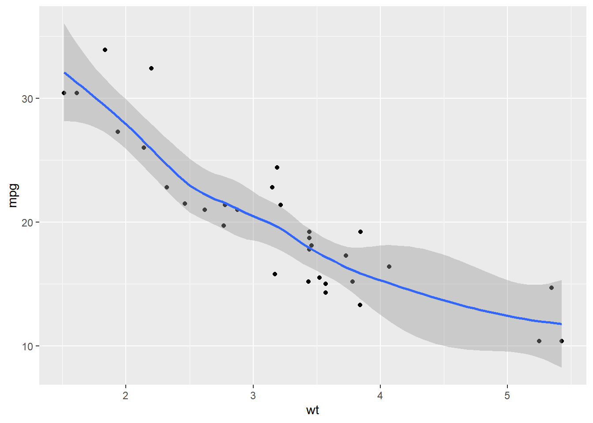
Used se = FALSE in stat_smooth() to remove the 95% Confidence Interval.
# Amend the plot. Use lin. reg. smoothing; turn off std err ribbon
ggplot(mtcars, aes(x = wt, y = mpg)) +
geom_point() +
geom_smooth(method = "lm", se = F)## `geom_smooth()` using formula = 'y ~ x'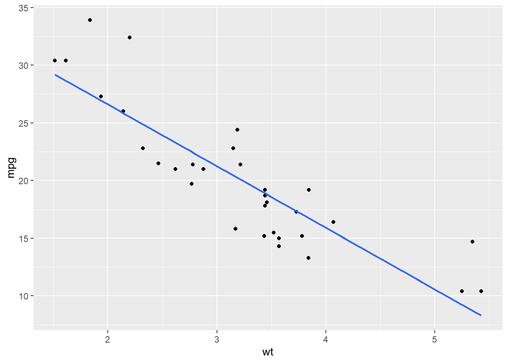
# Amend the plot. Swap geom_smooth() for stat_smooth().
ggplot(mtcars, aes(x = wt, y = mpg)) +
geom_point() +
stat_smooth(method = "lm", se = FALSE)## `geom_smooth()` using formula = 'y ~ x'
You can use either stat_smooth() or geom_smooth() to apply a linear model.
8.1.1.2 Grouping variables
Considering the situation of looking at sub-groups in our dataset. For this we’ll encounter the invisible group aesthetic.
# Amend the plot to add another smooth layer with dummy grouping
ggplot(mtcars, aes(x = wt, y = mpg, color = fcyl)) +
geom_point() +
stat_smooth(method = "lm", se = FALSE) +
stat_smooth(aes(group = 1), method = "lm", se = FALSE)## `geom_smooth()` using formula = 'y ~ x'
## `geom_smooth()` using formula = 'y ~ x'## Warning: The following aesthetics were dropped during
## statistical transformation: colour
## ℹ This can happen when ggplot fails to infer
## the correct grouping structure in the data.
## ℹ Did you forget to specify a `group`
## aesthetic or to convert a numerical
## variable into a factor?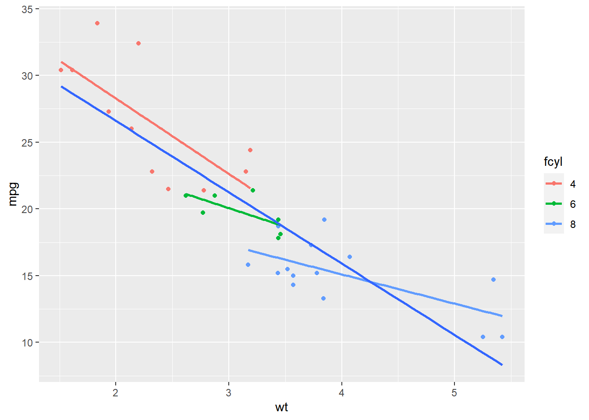
#### Modifying stat_smooth
The default span for LOESS is 0.9. A lower span will result in a better fit with more detail; but don’t overdo it or you’ll end up over-fitting!
ggplot(mtcars, aes(x = wt, y = mpg)) +
geom_point() +
# Add 3 smooth LOESS stats, varying span & color
stat_smooth(color = "red", span = 0.9, se = F) +
stat_smooth(color = "green", span = 0.6, se = F) +
stat_smooth(color = "blue", span = 0.3, se = F)## `geom_smooth()` using method = 'loess' and
## formula = 'y ~ x'
## `geom_smooth()` using method = 'loess' and
## formula = 'y ~ x'
## `geom_smooth()` using method = 'loess' and
## formula = 'y ~ x'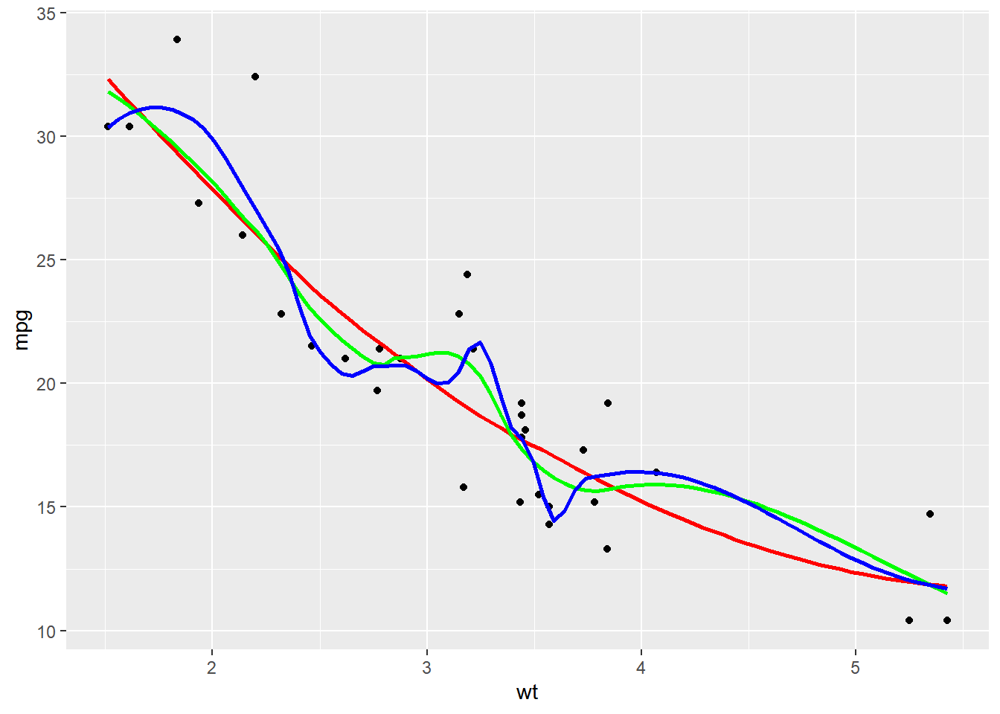
# Amend the plot to color by fcyl
ggplot(mtcars, aes(x = wt, y = mpg)) +
geom_point() +
# Add a smooth LOESS stat, no ribbon
stat_smooth(se = F, color = "red") +
# Add a smooth lin. reg. stat, no ribbon
stat_smooth(method = "lm", se = F)## `geom_smooth()` using method = 'loess' and
## formula = 'y ~ x'
## `geom_smooth()` using formula = 'y ~ x'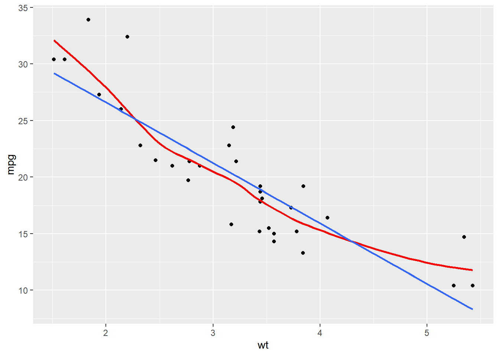
# Amend the plot
ggplot(mtcars, aes(x = wt, y = mpg, color = fcyl)) +
geom_point() +
# Map color to dummy variable "All"
stat_smooth(se = FALSE, aes(color = "All")) +
stat_smooth(method = "lm", se = FALSE)## `geom_smooth()` using method = 'loess' and
## formula = 'y ~ x'
## `geom_smooth()` using formula = 'y ~ x'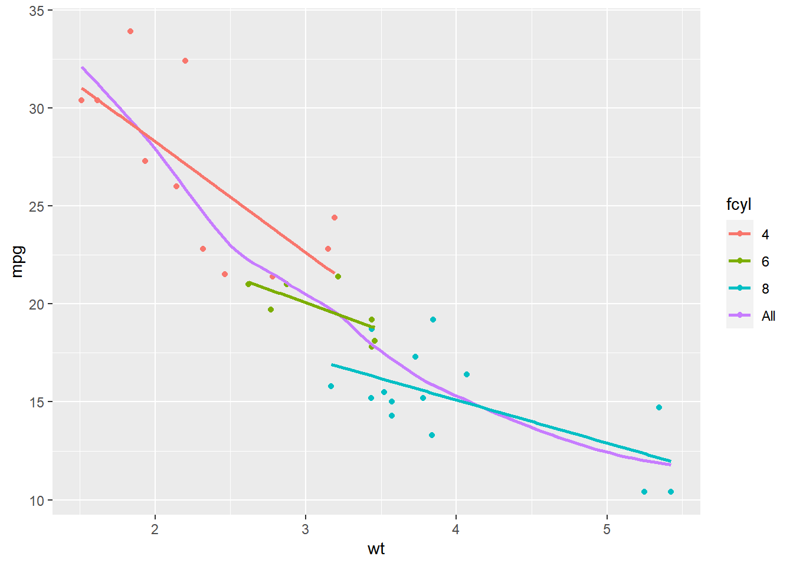
In this exercise we’ll take a look at the standard error ribbons, which show the 95% confidence interval of smoothing models.
Vocab <- read_csv("data/Vocab.csv") %>%
mutate(year_group = ifelse(year > 1995, "(1995,2016]", "[1974,1995]"))## Rows: 21638 Columns: 4
## ── Column specification ──────────────────────
## Delimiter: ","
## chr (1): sex
## dbl (3): year, education, vocabulary
##
## ℹ Use `spec()` to retrieve the full column specification for this data.
## ℹ Specify the column types or set `show_col_types = FALSE` to quiet this message.Vocab$year_group <- factor(Vocab$year_group)
Vocab$vocabulary <- as.numeric(Vocab$vocabulary)
str(Vocab)## tibble [21,638 × 5] (S3: tbl_df/tbl/data.frame)
## $ year : num [1:21638] 2004 2004 2004 2004 2004 ...
## $ sex : chr [1:21638] "Female" "Female" "Male" "Female" ...
## $ education : num [1:21638] 9 14 14 17 14 14 12 10 11 9 ...
## $ vocabulary: num [1:21638] 3 6 9 8 1 7 6 6 5 1 ...
## $ year_group: Factor w/ 2 levels "(1995,2016]",..: 1 1 1 1 1 1 1 1 1 1 ...# Using Vocab, plot vocabulary vs. education, colored by year group
ggplot(Vocab, aes(x = education, y = vocabulary, color = year_group)) +
# Add jittered points with transparency 0.25
geom_jitter(alpha = 0.25) +
# Add a smooth lin. reg. line (with ribbon)
stat_smooth(method = "lm", se = T)## `geom_smooth()` using formula = 'y ~ x'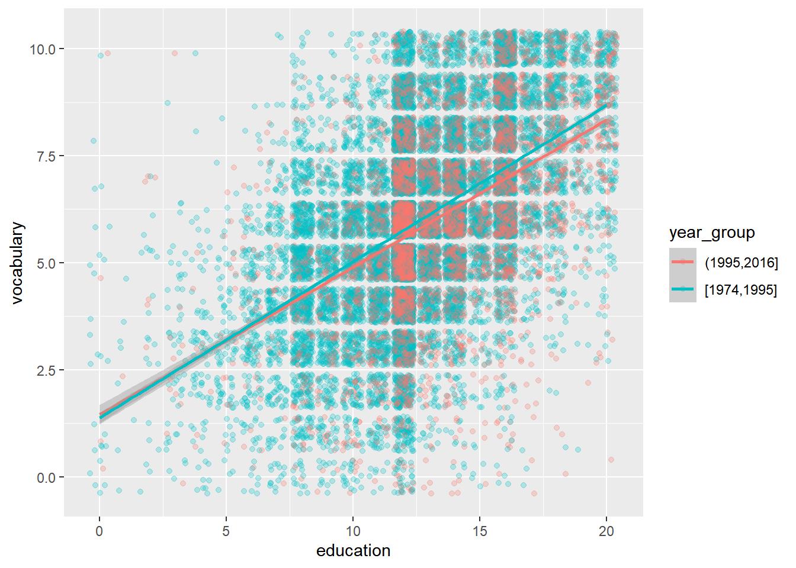
# Amend the plot
ggplot(Vocab, aes(x = education, y = vocabulary, color = year_group)) +
geom_jitter(alpha = 0.25) +
# Map the fill color to year_group, set the line size to 2
stat_smooth(method = "lm", aes(fill = year_group), linewidth = 2)## `geom_smooth()` using formula = 'y ~ x'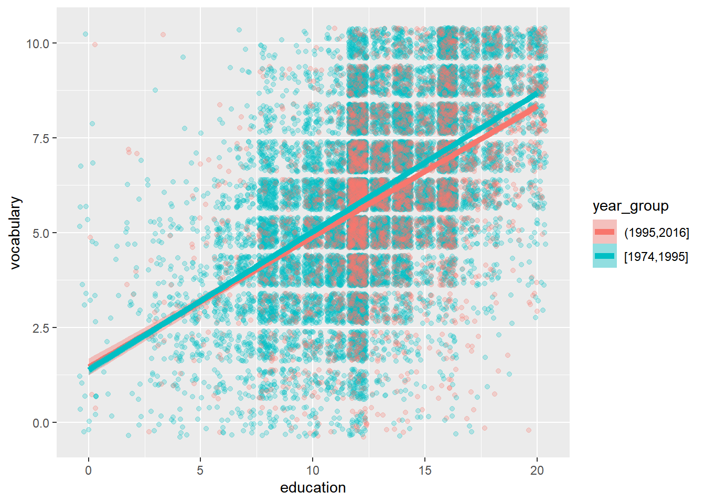
8.1.2 Stats: sum & quantile

geom_count() and stat_sum() get the same result.
geom_quantile(): dealing with heteroscedasticity. Same as stat_quantile().
8.1.2.1 Quantiles
Linear regression predicts the mean response from the explanatory variables, quantile regression predicts a quantile response (e.g. the median) from the explanatory variables. Specific quantiles can be specified with the quantiles argument.
ggplot(Vocab, aes(x = education, y = vocabulary)) +
geom_jitter(alpha = 0.25) +
# Add a quantile stat, at 0.05, 0.5, and 0.95
stat_quantile(quantiles = c(0.05, 0.5, 0.95))## Smoothing formula not specified. Using: y ~ x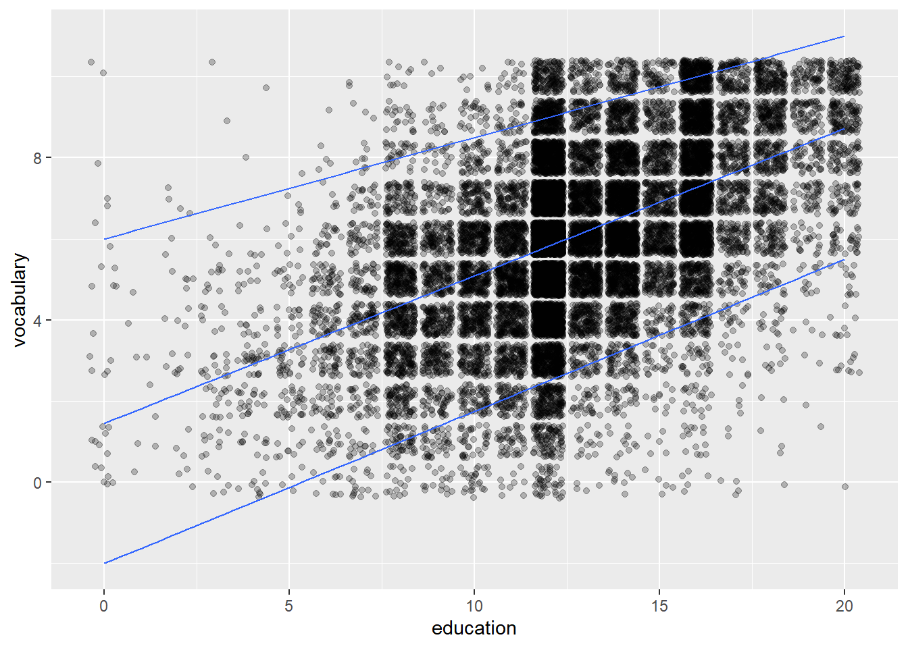
# Amend the plot to color by year_group
ggplot(Vocab, aes(x = education, y = vocabulary, color = year_group)) +
geom_jitter(alpha = 0.25) +
stat_quantile(quantiles = c(0.05, 0.5, 0.95))## Smoothing formula not specified. Using: y ~ x
## Smoothing formula not specified. Using: y ~ x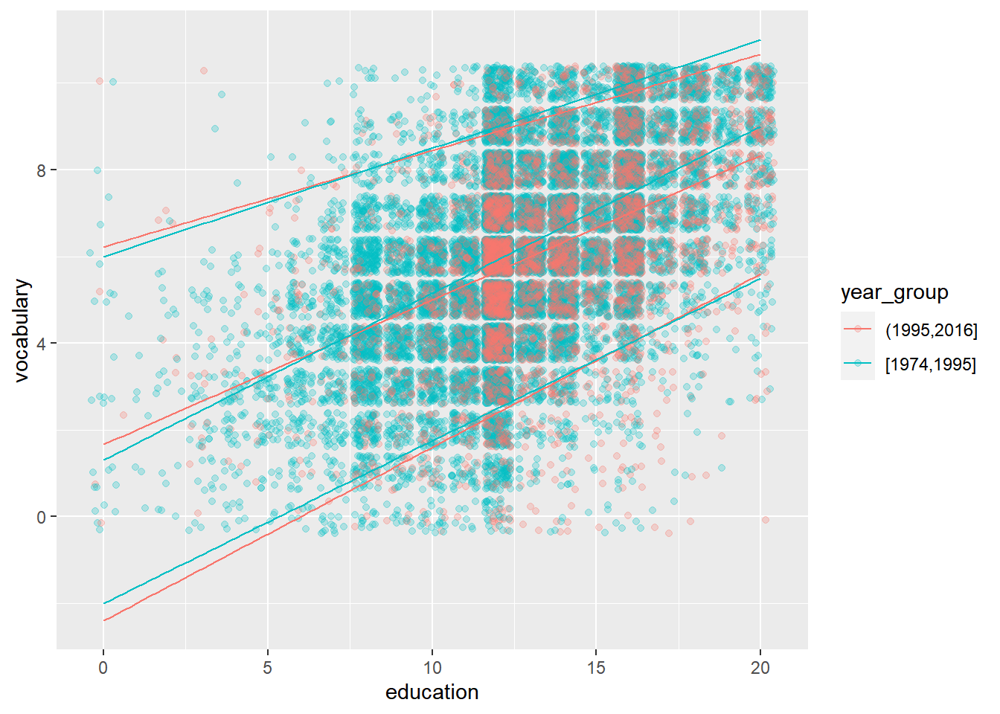
Quantile regression is a great tool for getting a more detailed overview of a large dataset.
8.1.2.2 Using stat_sum
In the Vocab dataset, education and vocabulary are integer variables. In the first course, you saw that this is one of the four causes of overplotting. You’d get a single point at each intersection between the two variables.
One solution, shown in the step 1, is jittering with transparency. Another solution is to use stat_sum(), which calculates the total number of overlapping observations and maps that onto the size aesthetic.
stat_sum() allows a special variable, ..prop.., to show the proportion of values within the dataset.
# Run this, look at the plot, then update it
ggplot(Vocab, aes(x = education, y = vocabulary)) +
# Replace this with a sum stat
stat_sum(alpha = 0.25)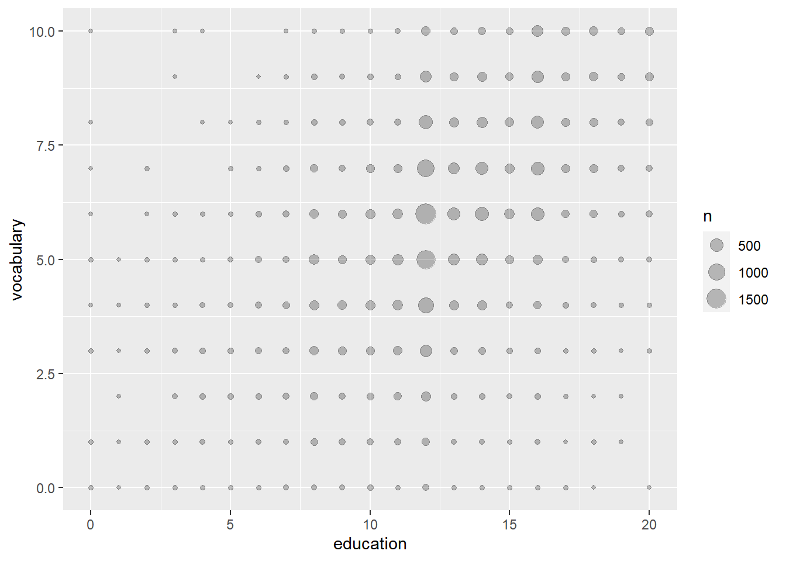
# Modify the size aesthetic with the appropriate scale function
ggplot(Vocab, aes(x = education, y = vocabulary)) +
stat_sum() +
# Add a size scale, from 1 to 10
scale_size(range = c(1,10))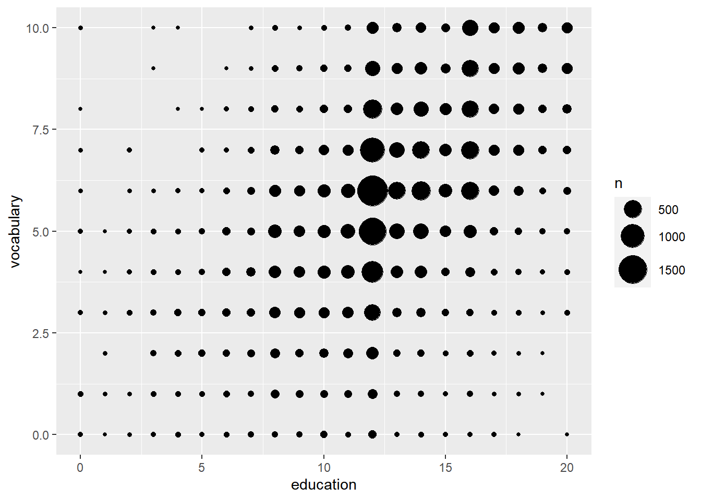
# Amend the stat to use proportion sizes, so circle size represents the proportion of the whole dataset
ggplot(Vocab, aes(x = education, y = vocabulary)) +
stat_sum(aes(size = ..prop..))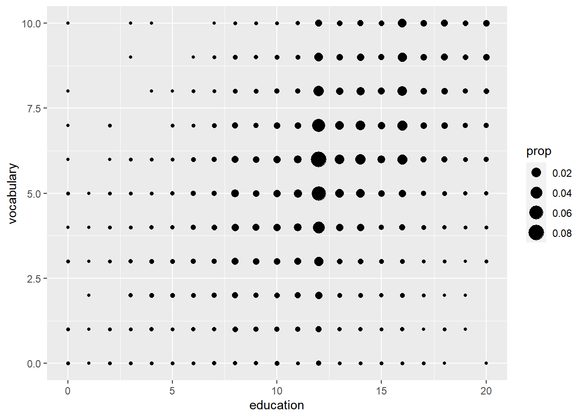
# Amend the plot to group by education, so that circle size represents the proportion of the group
ggplot(Vocab, aes(x = education, y = vocabulary, group = education)) +
stat_sum(aes(size = ..prop..))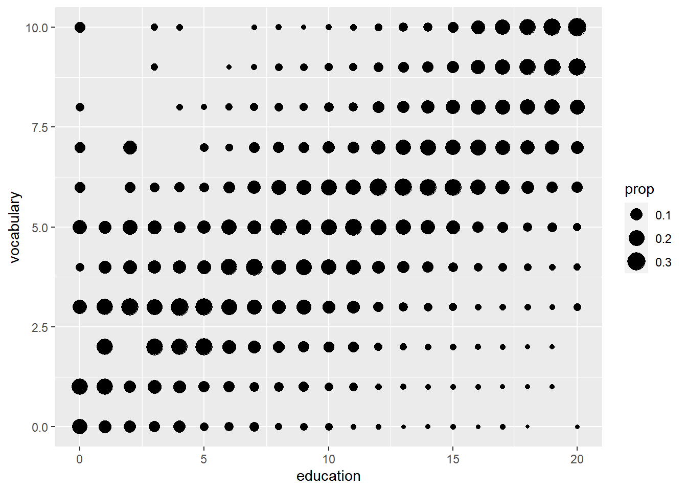
If a few data points overlap, jittering is great. When you have lots of overlaps (particularly where continuous data has been rounded), using stat_sum() to count the overlaps is more useful.
8.1.3 Stats outside geoms
| stat_ | Description |
|---|---|
stat_summary() |
summarize y values at distinct x values. |
stat_function() |
compute y values from a function of x values. |
stat_qq() |
perform calculations for a quantile-quantile plot. |
# ggplot2, 1 SD
mean_sdl(xx, mult = 1)
# ggplot2, stat_summary(function, function argument)
stat_summary(fun.data = mean_sdl,
fun.args = list(mult = 1))
stat_summary(fun.data = mean_sdl,
fun.args = list(mult=1),
geom = "errorbar",
width = 0.1)
# ggplot2, 95% confidence interval
mean_cl_normal(xx)# Normal distribution
ggplot(mam.new, aes(x = body)) +
geom_histogram(aes( y = ..density..)) +
geom_rug() +
stat_function(fun = dnorm, color = "red",
args = list(mean = mean(mam.new$body),
sd = sd(mam.new$body)))# QQ plot
ggplot(mam.new, aes(sample = body)) +
stat_qq() +
geom_qq_line(col = "red")8.1.3.1 Preparations
Here, we’ll establish our positions and base layer of the plot. Establishing these items as independent objects will allow us to recycle them easily in many layers, or plots.
position_jitter()adds jittering (e.g. for points).position_dodge()dodges geoms, (e.g. bar, col, boxplot, violin, errorbar, pointrange).position_jitterdodge()jitters and dodges geoms, (e.g. points).
# Define position objects, promotes consistency between layers
# 1. Jitter with width 0.2
posn_j <- position_jitter(width = 0.2)
# 2. Dodge with width 0.1
posn_d <- position_dodge(width = 0.1)
# 3. Jitter-dodge with jitter.width 0.2 and dodge.width 0.1
posn_jd <- position_jitterdodge(jitter.width = 0.2, dodge.width = 0.1)
# Create the plot base: wt vs. fcyl, colored by fam
p_wt_vs_fcyl_by_fam <- ggplot(mtcars, aes(x = fcyl, y = wt, color = fam))
# Add a point layer
p_wt_vs_fcyl_by_fam +
geom_point()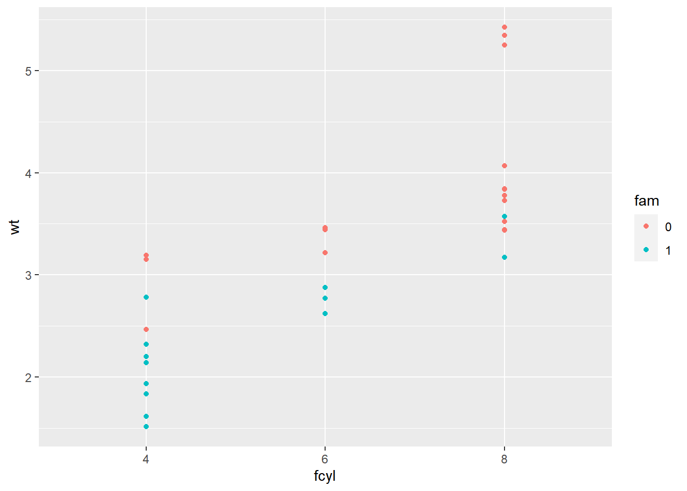
8.1.3.2 Using position objects
# Add jittering only
p_wt_vs_fcyl_by_fam +
geom_point(position = posn_j)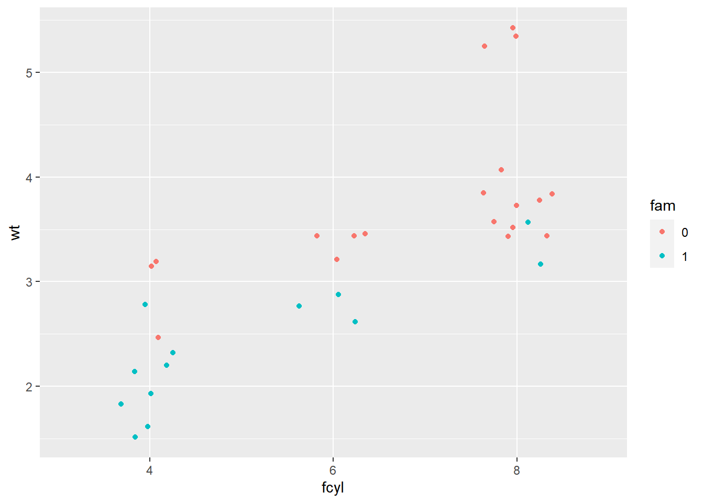
# Add dodging only
p_wt_vs_fcyl_by_fam +
geom_point(position = posn_d)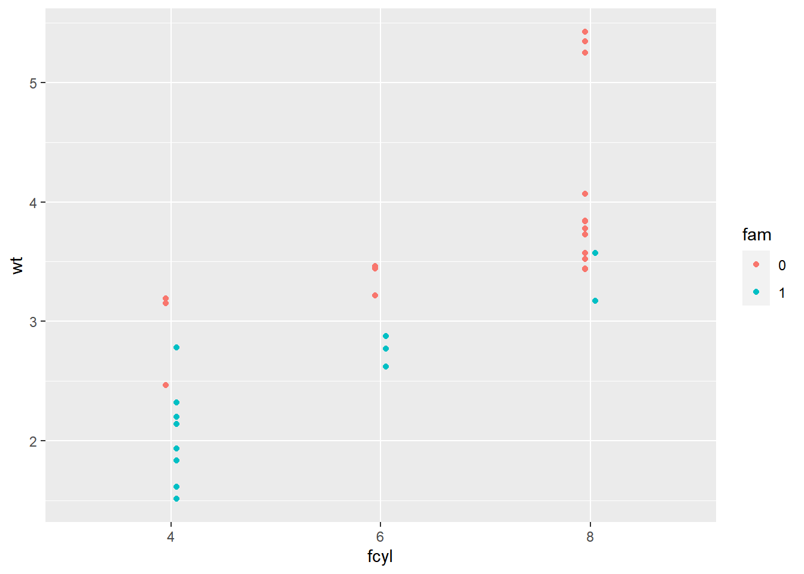
# Add jittering and dodging
p_wt_vs_fcyl_by_fam +
geom_point(position = posn_jd)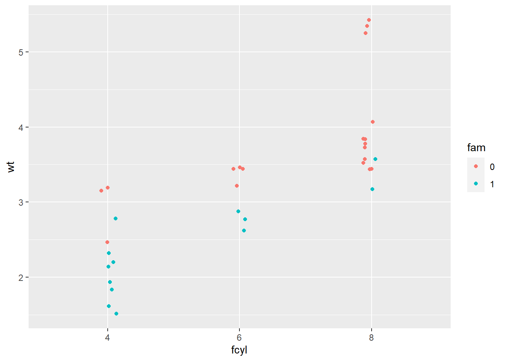
8.1.3.3 Plotting variations
Ｎow let’s explore stat_summary().
Summary statistics refers to a combination of location (mean or median) and spread (standard deviation or confidence interval).
These metrics are calculated in stat_summary() by passing a function to the fun.data argument. mean_sdl(), calculates multiples of the standard deviation and mean_cl_normal() calculates the t-corrected 95% CI.
You can always assign your own function to the fun.data argument as long as the result is a data frame and the variable names match the aesthetics that you will need for the geom layer.
Arguments to the data function are passed to stat_summary()’s fun.args argument as a list.
p_wt_vs_fcyl_by_fam_jit <- p_wt_vs_fcyl_by_fam +
geom_point(position = posn_j)
# Add error bars representing the standard deviation
# The default geom for stat_summary() is "pointrange"
p_wt_vs_fcyl_by_fam_jit +
# Add a summary stat of std deviation limits
stat_summary(fun.data = mean_sdl,
fun.args = list(mult = 1),
position = posn_d)
p_wt_vs_fcyl_by_fam_jit +
# Change the geom to be an errorbar
stat_summary(fun.data = mean_sdl,
fun.args = list(mult = 1),
position = posn_d,
geom = "errorbar")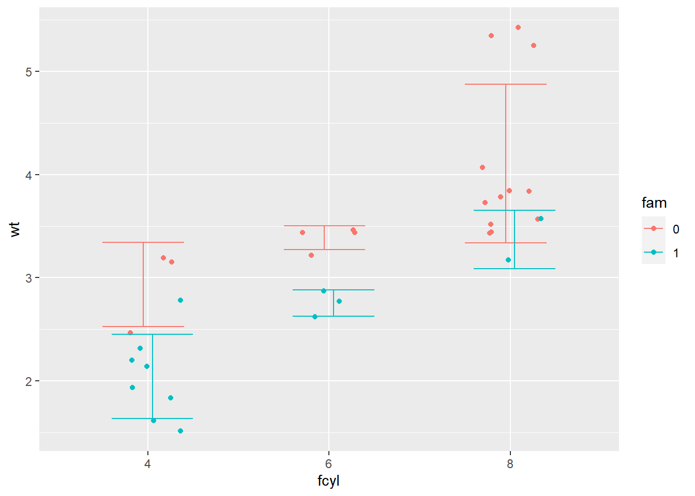
# add a summary stat of 95% confidence limits
p_wt_vs_fcyl_by_fam_jit +
# Add a summary stat of normal confidence limits
stat_summary(fun.data = mean_cl_normal,
position = posn_d)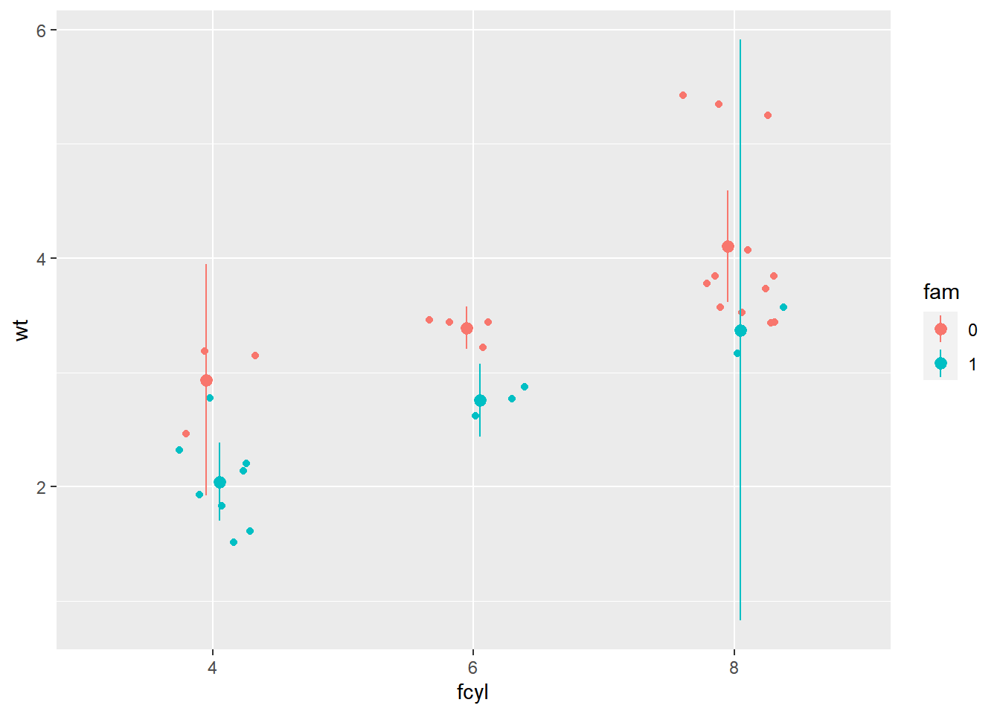
8.2 Coordinates
8.2.1 Coordinates layer
- Controls plot dimensions
coord_: e.g.coord_cartesian()
8.2.1.1 Zooming in
coord_cartesian(xlim = ...)- Really zooming in using the
coord_cartesianfunction. You can see the zoom because the LOESS curve continues past the data presented, and the models look the same as in the original plot.
- Really zooming in using the
scale_x_continuous(limits = ...)- Since the LOESS model is only defined for the points shown, although there is data beyond this region. (because the limits we set in
scale_x_continuouswere a smaller range than the data and thus values were filtered out.) That’s also why the models look different.
- Since the LOESS model is only defined for the points shown, although there is data beyond this region. (because the limits we set in
xlim(...)- A quick and dirty alternative is to call
xlimas a function itself. It has the same effect.
- A quick and dirty alternative is to call
| original plot | coord_cartesian() |
scale_x_continuous() |
xlim() |
|---|---|---|---|
 |
 |
 |
 |
| outcome | 放大原圖的特定區域 | 改變原圖 | 改變原圖 |
| dataset | no changes to the dataset | change the dataset | change the dataset |
# Run the code, view the plot, then update it
ggplot(mtcars, aes(x = wt, y = hp, color = fam)) +
geom_point() +
geom_smooth()## `geom_smooth()` using method = 'loess' and
## formula = 'y ~ x'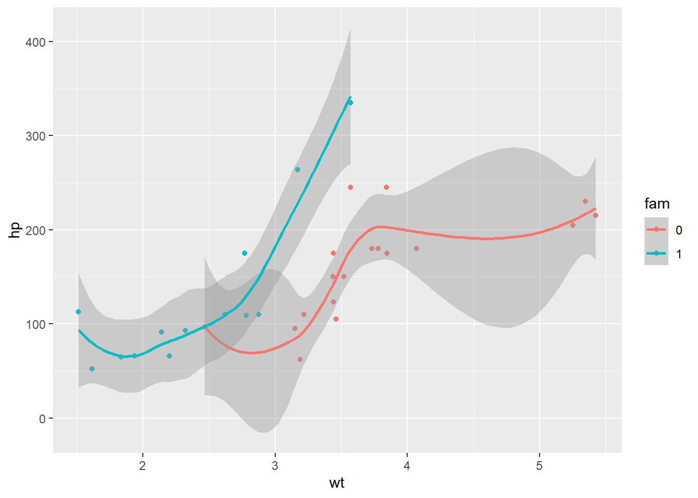
Using the scale function to zoom in meant that there wasn’t enough data to calculate the trend line, and geom_smooth() failed.
ggplot(mtcars, aes(x = wt, y = hp, color = fam)) +
geom_point() +
geom_smooth() +
# Add a continuous x scale from 3 to 6
scale_x_continuous(limits = c(3, 6))## `geom_smooth()` using method = 'loess' and
## formula = 'y ~ x'## Warning: Removed 12 rows containing non-finite values
## (`stat_smooth()`).## Warning in simpleLoess(y, x, w, span, degree = degree, parametric = parametric,
## : span too small. fewer data values than degrees of freedom.## Warning in simpleLoess(y, x, w, span, degree = degree, parametric = parametric,
## : at 3.168## Warning in simpleLoess(y, x, w, span, degree = degree, parametric = parametric,
## : radius 4e-06## Warning in simpleLoess(y, x, w, span, degree = degree, parametric = parametric,
## : all data on boundary of neighborhood. make span bigger## Warning in simpleLoess(y, x, w, span, degree = degree, parametric = parametric,
## : pseudoinverse used at 3.168## Warning in simpleLoess(y, x, w, span, degree = degree, parametric = parametric,
## : neighborhood radius 0.002## Warning in simpleLoess(y, x, w, span, degree = degree, parametric = parametric,
## : reciprocal condition number 1## Warning in simpleLoess(y, x, w, span, degree = degree, parametric = parametric,
## : at 3.572## Warning in simpleLoess(y, x, w, span, degree = degree, parametric = parametric,
## : radius 4e-06## Warning in simpleLoess(y, x, w, span, degree = degree, parametric = parametric,
## : all data on boundary of neighborhood. make span bigger## Warning in simpleLoess(y, x, w, span, degree = degree, parametric = parametric,
## : There are other near singularities as well. 4e-06## Warning in simpleLoess(y, x, w, span, degree = degree, parametric = parametric,
## : zero-width neighborhood. make span bigger
## Warning in simpleLoess(y, x, w, span, degree = degree, parametric = parametric,
## : zero-width neighborhood. make span bigger## Warning: Computation failed in `stat_smooth()`
## Caused by error in `predLoess()`:
## ! NA/NaN/Inf in foreign function call (arg 5)## Warning: Removed 12 rows containing missing values
## (`geom_point()`).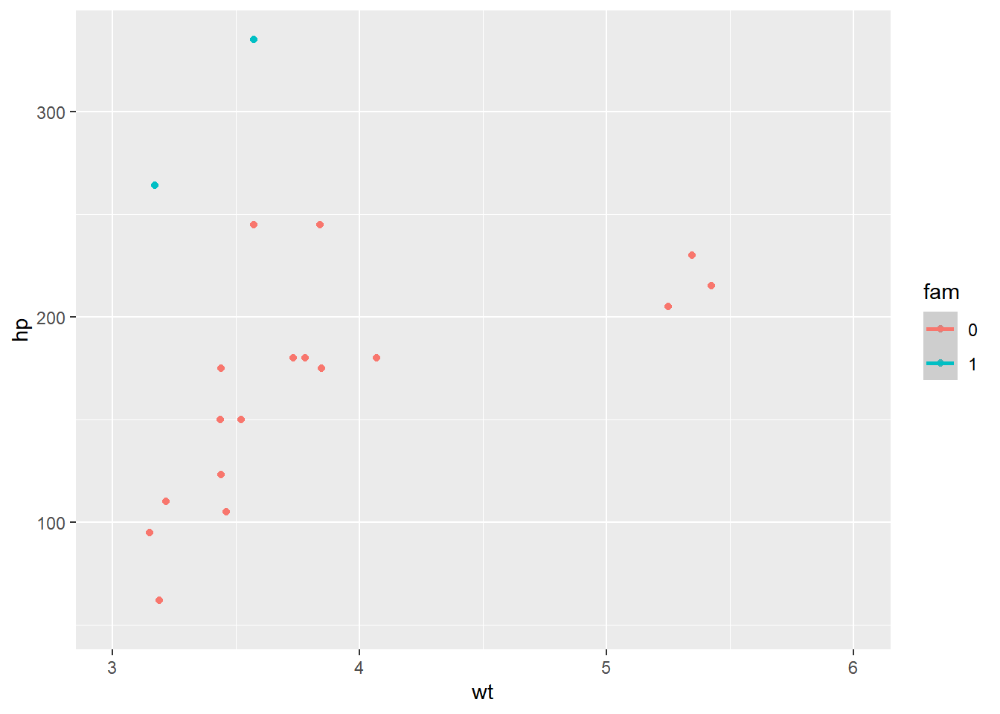
When coord_cartesian() was applied, the full dataset was used for the trend calculation.
ggplot(mtcars, aes(x = wt, y = hp, color = fam)) +
geom_point() +
geom_smooth() +
# Add Cartesian coordinates with x limits from 3 to 6
coord_cartesian(xlim = c(3, 6))## `geom_smooth()` using method = 'loess' and
## formula = 'y ~ x'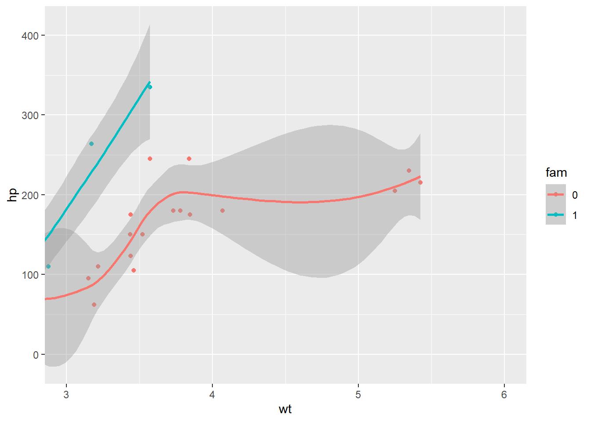
8.2.1.2 Aspect ratio
Function: coord_fixed(ratio = y/x)
- Height-to-width ratio
- Watch out for deception!
- No universal standard so far
- Typically use 1:1 if data is on the same scale
Aspect ratio I: 1:1 ratios
We can set the aspect ratio of a plot with coord_fixed(), which uses ratio = 1 as a default. A 1:1 aspect ratio is most appropriate when two continuous variables are on the same scale, so it only makes sense that one unit on the plot should be the same physical distance on each axis. This gives a more truthful depiction of the relationship between the two variables since the aspect ratio can change the angle of our smoothing line. This would give an erroneous impression of the data. Of course the underlying linear models don’t change, but our perception can be influenced by the angle drawn.
ggplot(iris, aes(x = Sepal.Length, y = Sepal.Width, color = Species)) +
geom_jitter() +
geom_smooth(method = "lm", se = FALSE) +
# Fix the coordinate ratio
coord_fixed()## `geom_smooth()` using formula = 'y ~ x'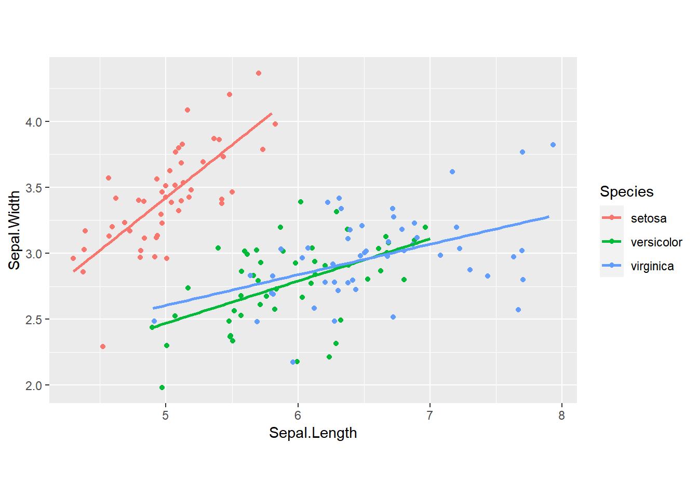
Aspect ratio II: setting ratios
library(zoo)
sunspots.m <- data.frame(
year = index(sunspot.month),
value = reshape2::melt(sunspot.month)$value)
sun_plot <- ggplot(sunspots.m, aes(x = year, y = value)) +
geom_line()
sun_plot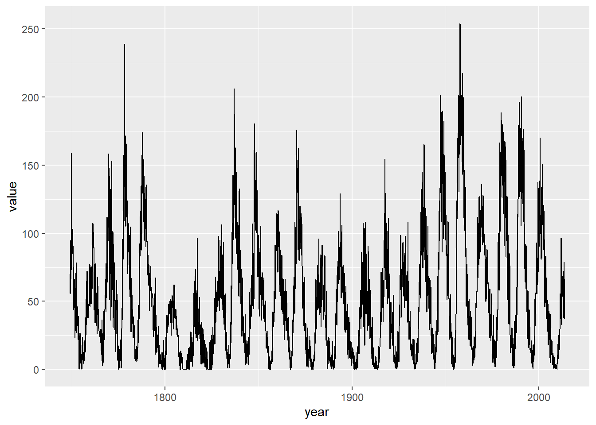
# Fix the aspect ratio to 1:1
sun_plot +
coord_fixed()## Don't know how to automatically pick scale
## for object of type <ts>. Defaulting to
## continuous.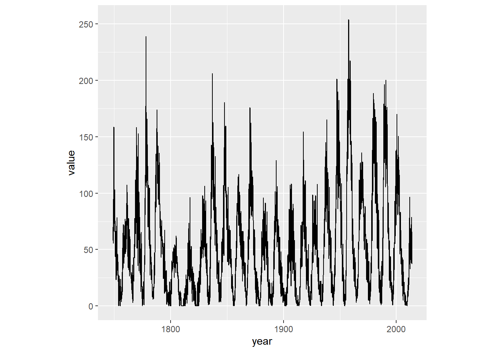
Making a wide plot by calling coord_fixed() with a low ratio is often useful for long time series.
# Change the aspect ratio to 1:20
sun_plot +
coord_fixed(1/20)## Don't know how to automatically pick scale
## for object of type <ts>. Defaulting to
## continuous.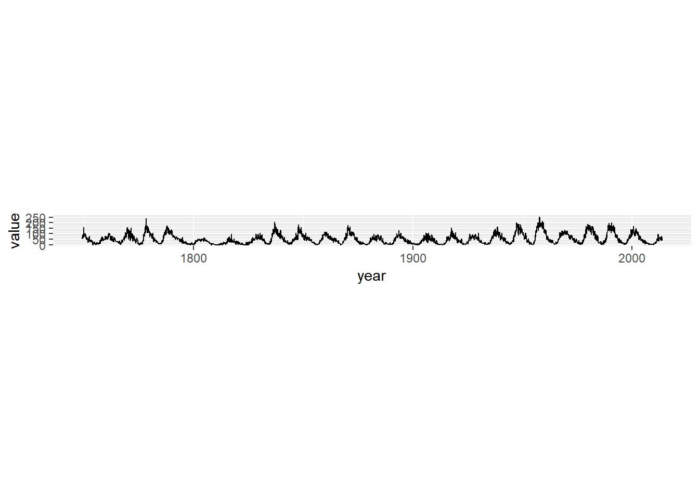
8.2.1.3 Expand and clip
The coord_*() layer functions offer two useful arguments that work well together: expand and clip.
expandsets a buffer margin around the plot, so data and axes don’t overlap. Settingexpandto0draws the axes to the limits of the data.clipdecides whether plot elements that would lie outside the plot panel are displayed or ignored (“clipped”).
ggplot(mtcars, aes(wt, mpg)) +
geom_point(size = 2) +
theme_classic()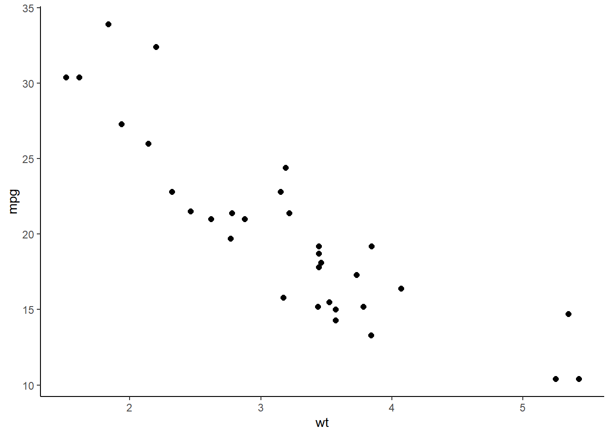
ggplot(mtcars, aes(wt, mpg)) +
geom_point(size = 2) +
# Add Cartesian coordinates with zero expansion
coord_cartesian(expand = 0) +
theme_classic()
Setting expand to 0 caused points at the edge of the plot panel to be cut off. Set the clip argument to "off" to prevent this.
ggplot(mtcars, aes(wt, mpg)) +
geom_point(size = 2) +
# Turn clipping off
coord_cartesian(expand = 0, clip = "off") +
theme_classic() +
# Remove axis lines
theme(axis.line = element_blank())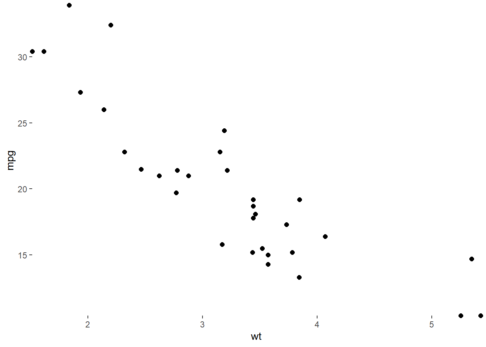
These arguments make clean and accurate plots by not cutting off data.
8.2.2 Coordinates vs. scales
8.2.2.1 Log-transforming scales
Using
scale_y_log10()andscale_x_log10()is equivalent to transforming our actual dataset before getting toggplot2.
Using
coord_trans(), settingx = "log10"and/ory = "log10"arguments, transforms the data after statistics have been calculated.The plot will look the same as with using
scale_*_log10(), but we’ll see the original values on our log10 transformed axes.
Let’s see this in action with positively skewed data - the brain and body weight of mammals from the msleep dataset.
str(msleep)## tibble [83 × 11] (S3: tbl_df/tbl/data.frame)
## $ name : chr [1:83] "Cheetah" "Owl monkey" "Mountain beaver" "Greater short-tailed shrew" ...
## $ genus : chr [1:83] "Acinonyx" "Aotus" "Aplodontia" "Blarina" ...
## $ vore : chr [1:83] "carni" "omni" "herbi" "omni" ...
## $ order : chr [1:83] "Carnivora" "Primates" "Rodentia" "Soricomorpha" ...
## $ conservation: chr [1:83] "lc" NA "nt" "lc" ...
## $ sleep_total : num [1:83] 12.1 17 14.4 14.9 4 14.4 8.7 7 10.1 3 ...
## $ sleep_rem : num [1:83] NA 1.8 2.4 2.3 0.7 2.2 1.4 NA 2.9 NA ...
## $ sleep_cycle : num [1:83] NA NA NA 0.133 0.667 ...
## $ awake : num [1:83] 11.9 7 9.6 9.1 20 9.6 15.3 17 13.9 21 ...
## $ brainwt : num [1:83] NA 0.0155 NA 0.00029 0.423 NA NA NA 0.07 0.0982 ...
## $ bodywt : num [1:83] 50 0.48 1.35 0.019 600 ...# Produce a scatter plot of brainwt vs. bodywt
ggplot(msleep, aes(bodywt, brainwt)) +
geom_point() +
ggtitle("Raw Values")## Warning: Removed 27 rows containing missing values
## (`geom_point()`).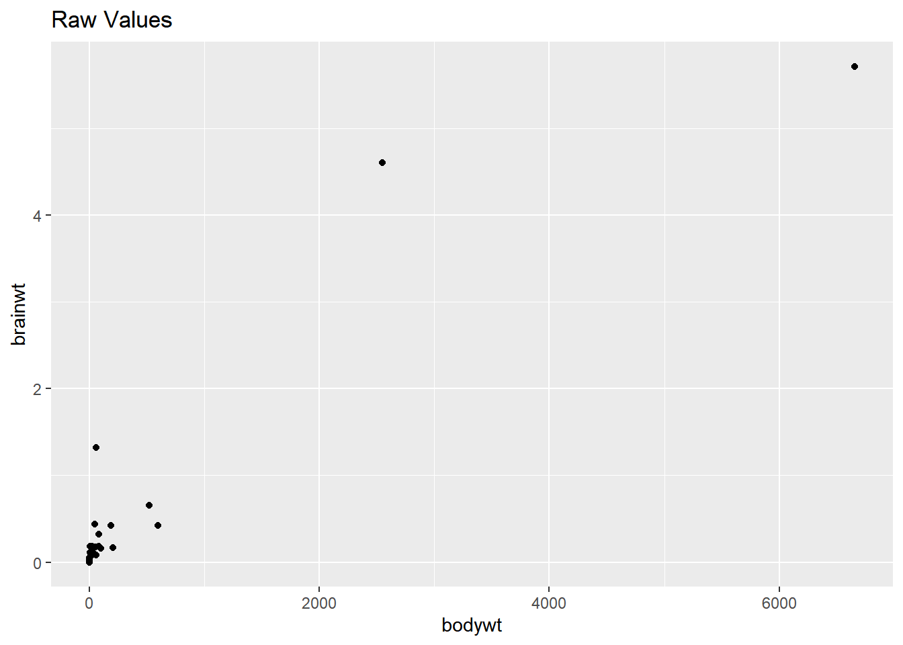
# Add scale_*_*() functions
ggplot(msleep, aes(bodywt, brainwt)) +
geom_point() +
scale_x_log10() +
scale_y_log10() +
ggtitle("Scale_ functions")## Warning: Removed 27 rows containing missing values
## (`geom_point()`).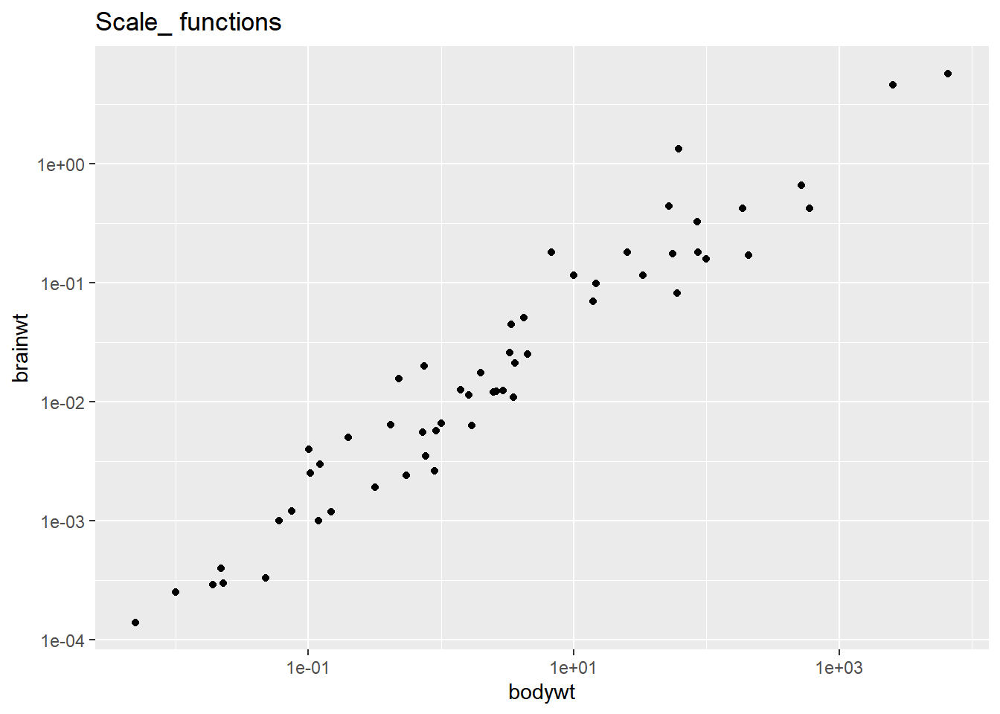
# Perform a log10 coordinate system transformation
ggplot(msleep, aes(bodywt, brainwt)) +
geom_point() +
coord_trans(x = "log10", y = "log10")## Warning: Removed 27 rows containing missing values
## (`geom_point()`).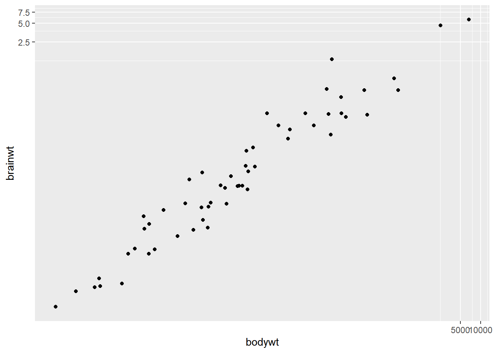
8.2.2.2 Adding stats to transformed scales
Remember that statistics are calculated on the untransformed data. A linear model may end up looking not-so-linear after an coord_trans axis transformation.
# Plot with a scale_*_*() function:
ggplot(msleep, aes(bodywt, brainwt)) +
geom_point() +
geom_smooth(method = "lm", se = FALSE) +
# Add a log10 x scale
scale_x_log10() +
# Add a log10 y scale
scale_y_log10() +
ggtitle("Scale functions")## `geom_smooth()` using formula = 'y ~ x'## Warning: Removed 27 rows containing non-finite values
## (`stat_smooth()`).## Warning: Removed 27 rows containing missing values
## (`geom_point()`).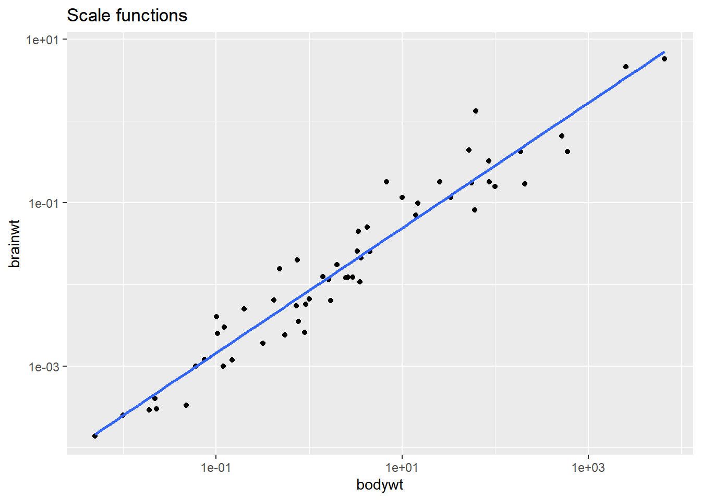
# Plot with transformed coordinates
ggplot(msleep, aes(bodywt, brainwt)) +
geom_point() +
geom_smooth(method = "lm", se = FALSE) +
# Add a log10 coordinate transformation for x and y axes
coord_trans(x = "log10", y = "log10") +
ggtitle("Coord_trans function")## `geom_smooth()` using formula = 'y ~ x'## Warning: Removed 27 rows containing non-finite values
## (`stat_smooth()`).
## Removed 27 rows containing missing values
## (`geom_point()`).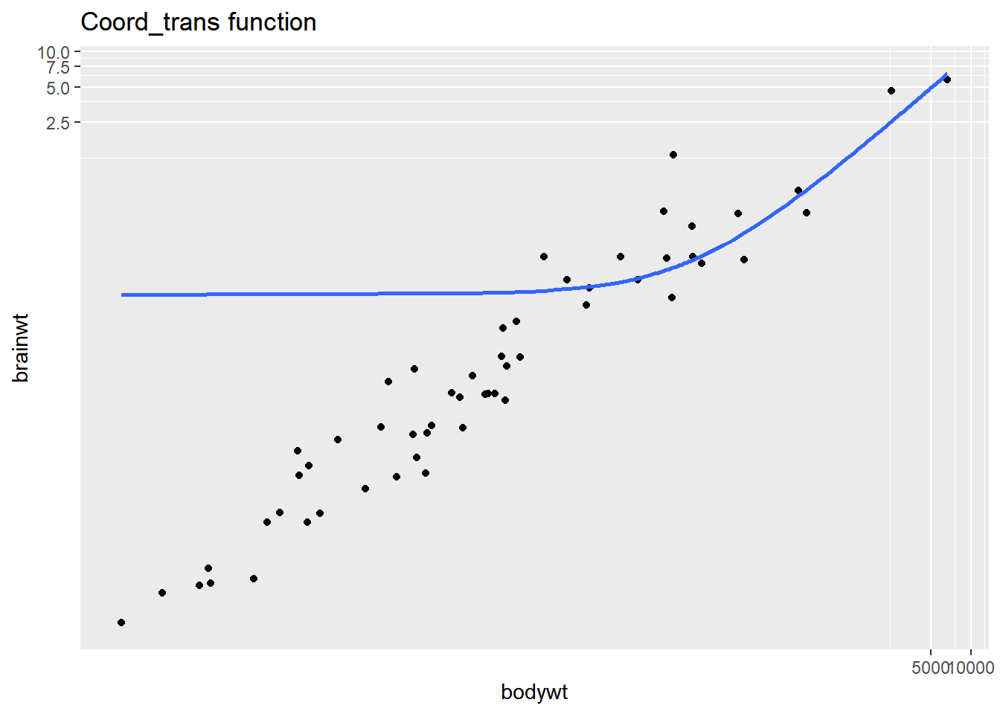
The smooth trend line is calculated after scale transformations but not coordinate transformations, so the second plot doesn’t make sense. Be careful when using the coord_trans() function!
8.2.3 Double & flipped axes
8.2.3.1 Useful double axes
Double x or y axes
- Add raw and transformed values. A scale that is unintuitive for many people can be made easier by adding a transformation as a double axis.
airquality <- read_csv("data/airquality.csv")## Rows: 153 Columns: 7
## ── Column specification ──────────────────────
## Delimiter: ","
## chr (1): Date
## dbl (6): Ozone, Solar.R, Wind, Temp, Month, Day
##
## ℹ Use `spec()` to retrieve the full column specification for this data.
## ℹ Specify the column types or set `show_col_types = FALSE` to quiet this message.str(airquality)## spc_tbl_ [153 × 7] (S3: spec_tbl_df/tbl_df/tbl/data.frame)
## $ Ozone : num [1:153] 41 36 12 18 NA 28 23 19 8 NA ...
## $ Solar.R: num [1:153] 190 118 149 313 NA NA 299 99 19 194 ...
## $ Wind : num [1:153] 7.4 8 12.6 11.5 14.3 14.9 8.6 13.8 20.1 8.6 ...
## $ Temp : num [1:153] 67 72 74 62 56 66 65 59 61 69 ...
## $ Month : num [1:153] 5 5 5 5 5 5 5 5 5 5 ...
## $ Day : num [1:153] 1 2 3 4 5 6 7 8 9 10 ...
## $ Date : chr [1:153] "5/1/1973" "5/2/1973" "5/3/1973" "5/4/1973" ...
## - attr(*, "spec")=
## .. cols(
## .. Ozone = col_double(),
## .. Solar.R = col_double(),
## .. Wind = col_double(),
## .. Temp = col_double(),
## .. Month = col_double(),
## .. Day = col_double(),
## .. Date = col_character()
## .. )
## - attr(*, "problems")=<externalptr>airquality$Date <- as.Date(airquality$Date, format = "%m/%d/%Y")# Using airquality, plot Temp vs. Date
ggplot(airquality, aes(x = Date, y = Temp)) +
# Add a line layer
geom_line() +
labs(x = "Date (1973)", y = "Fahrenheit")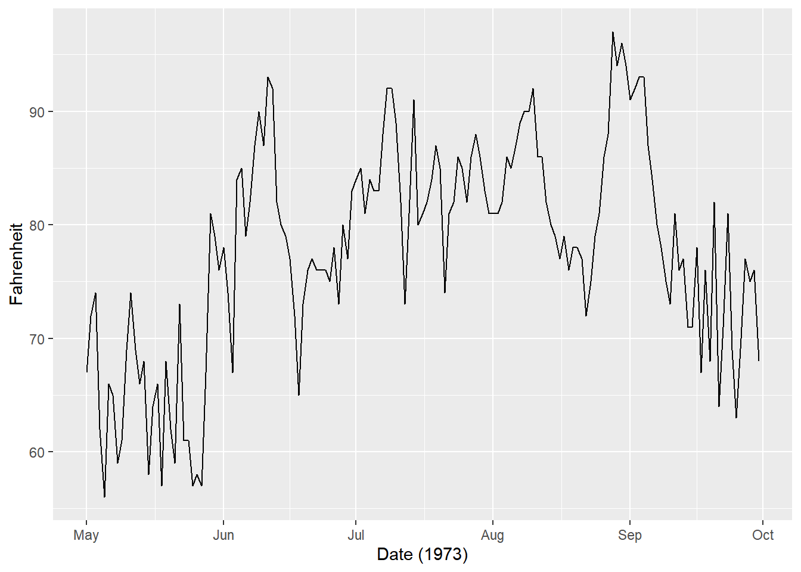
# Define breaks (Fahrenheit)
y_breaks <- c(59, 68, 77, 86, 95, 104)
# Convert y_breaks from Fahrenheit to Celsius
y_labels <- (y_breaks - 32)*5/9
# Create a secondary x-axis
secondary_y_axis <- sec_axis(
# Use identity transformation
trans = identity,
name = "Celsius",
# Define breaks and labels as above
breaks = y_breaks,
labels = y_labels
)
# Examine the object
secondary_y_axis## <ggproto object: Class AxisSecondary, gg>
## axis: NULL
## break_info: function
## breaks: 59 68 77 86 95 104
## create_scale: function
## detail: 1000
## empty: function
## guide: waiver
## init: function
## labels: 15 20 25 30 35 40
## make_title: function
## mono_test: function
## name: Celsius
## trans: function
## transform_range: function
## super: <ggproto object: Class AxisSecondary, gg># Update the plot
ggplot(airquality, aes(Date, Temp)) +
geom_line() +
# Add the secondary y-axis
scale_y_continuous(sec.axis = secondary_y_axis) +
labs(x = "Date (1973)", y = "Fahrenheit")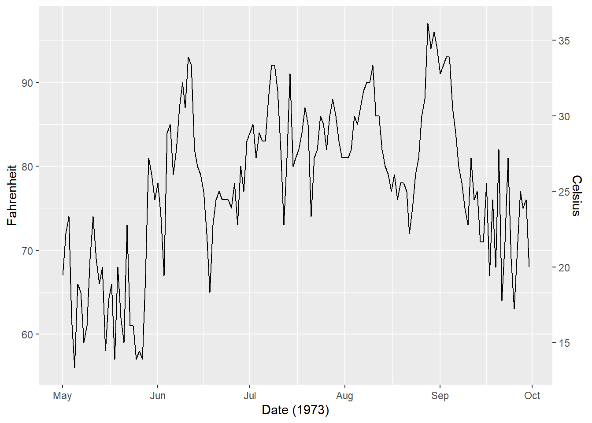
Double axes are most useful when you want to display the same value in two differnt units.
8.2.3.2 Flipping axes
Flipping axes means to reverse the variables mapped onto the x and y aesthetics. We can just change the mappings in aes(), but we can also use the coord_flip() layer function.
There are two reasons to use this function:
We want a vertical geom to be horizontal, or
We’ve completed a long series of plotting functions and want to flip it without having to rewrite all our commands.
# Plot fcyl bars, filled by fam
ggplot(mtcars, aes(fcyl, fill = fam)) +
# Place bars side by side
geom_bar(position = "dodge")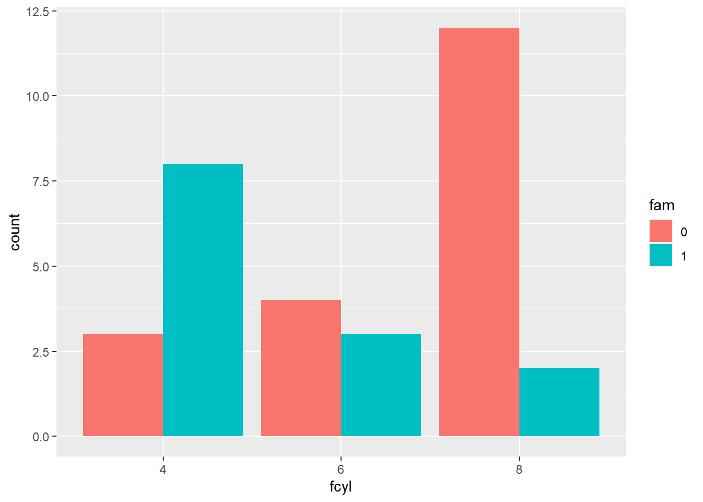
To get horizontal bars, add a coord_flip() function. Horizontal bars are especially useful when the axis labels are long.
# Plot fcyl bars, filled by fam
ggplot(mtcars, aes(fcyl, fill = fam)) +
# Place bars side by side
geom_bar(position = "dodge") +
coord_flip()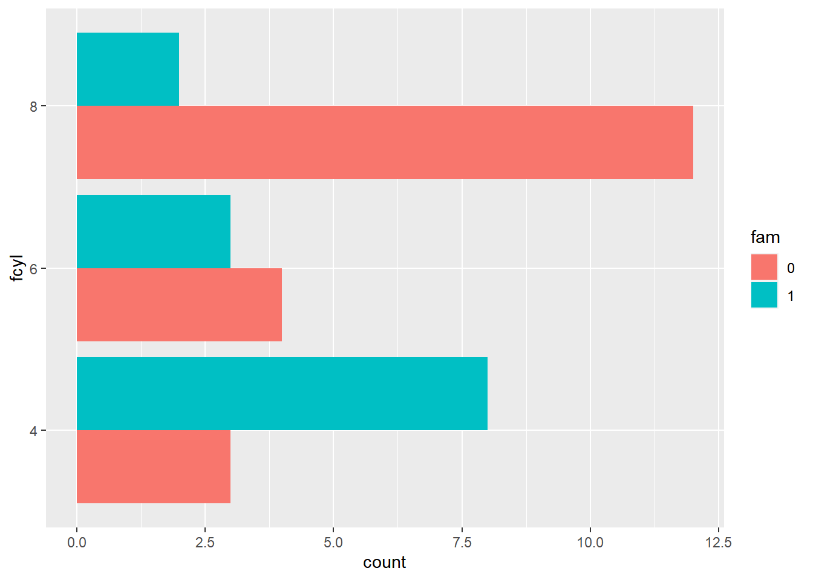
ggplot(mtcars, aes(fcyl, fill = fam)) +
# Set a dodge width of 0.5 for partially overlapping bars
geom_bar(position = position_dodge(width = 0.5)) +
coord_flip()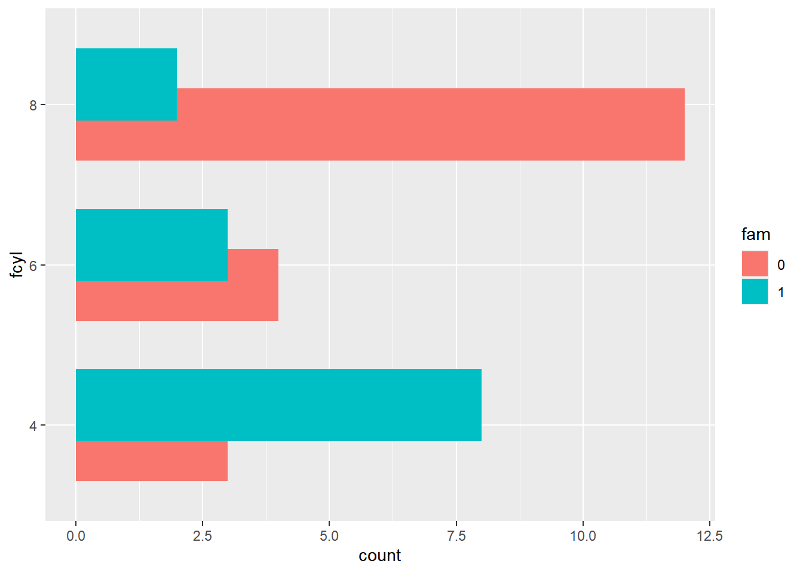
In this exercise, we’ll continue to use the coord_flip() layer function to reverse the variables mapped onto the x and y aesthetics.
mtcars <- mtcars %>%
mutate(car = row.names(mtcars))
# Plot of wt vs. car
ggplot(mtcars, aes(x = car, y = wt)) +
# Add a point layer
geom_point() +
labs(x = "car", y = "weight")
It would be easier to read if car was mapped to the y axis. Flip the coordinates. Notice that the labels also get flipped!
# Flip the axes to set car to the y axis
ggplot(mtcars, aes(car, wt)) +
geom_point() +
labs(x = "car", y = "weight") +
coord_flip()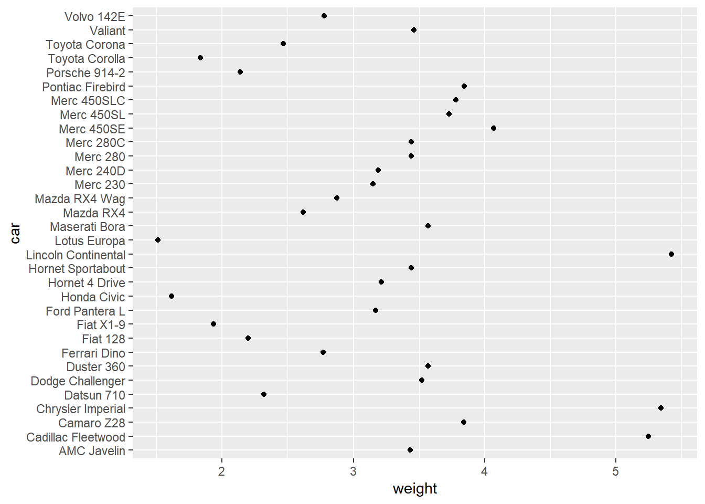
8.2.4 Polar coordinates
- Cartesian (2d)
- Orthogonal x and y-axes
- Maps
- Many projections
- Polar
- Transformed Cartesian space
8.2.4.1 Pie charts
The coord_polar() function converts a planar x-y Cartesian plot to polar coordinates. This can be useful if you are producing pie charts.
We can imagine two forms for pie charts - the typical filled circle, or a colored ring.
# mapping the angle to the y variable by setting theta to "y"
ggplot(mtcars, aes(x = 1, fill = fcyl)) +
geom_bar() +
# Add a polar coordinate system
coord_polar(theta = "y")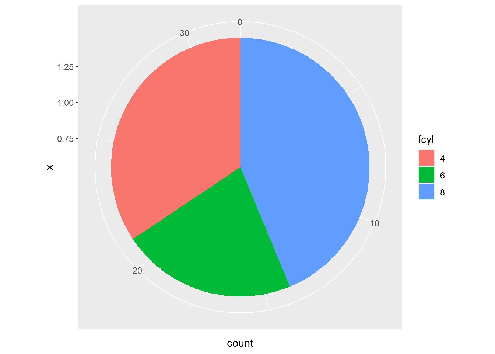
ggplot(mtcars, aes(x = 1, fill = fcyl)) +
# Reduce the bar width to 0.1
geom_bar(width = 0.1) +
coord_polar(theta = "y") +
# Add a continuous x scale from 0.5 to 1.5
scale_x_continuous(limits = c(0.5, 1.5))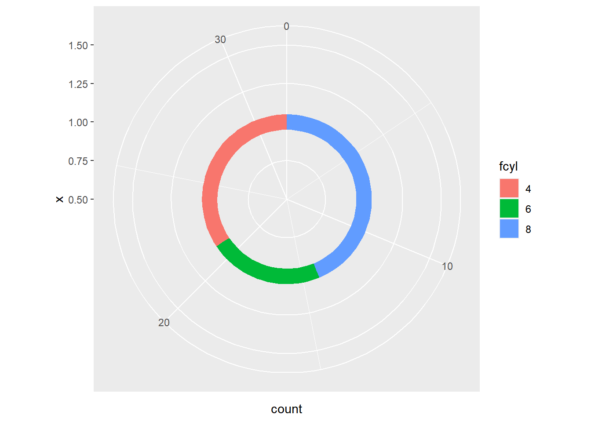
Polar coordinates are particularly useful if you are dealing with a cycle, like yearly data, compass direction or time of day.
8.2.4.2 Wind rose plots
The wind dataset contains hourly measurements for windspeed (ws) and direction (wd) from London in 2003.
wind <- read.table("data/wind.txt", sep = "\t", header = T)
head(wind)## date ws wd
## 1 1/1/2003 0:00 4 - 6 SSE
## 2 1/1/2003 1:00 4 - 6 SE
## 3 1/1/2003 2:00 2 - 4 SE
## 4 1/1/2003 3:00 4 - 6 SE
## 5 1/1/2003 4:00 4 - 6 SE
## 6 1/1/2003 5:00 4 - 6 SEwind <- wind %>%
mutate(date = as.POSIXct(date, format = "%m/%d/%Y %H:%M"),
ws = factor(ws),
wd = factor(wd))
str(wind)## 'data.frame': 8753 obs. of 3 variables:
## $ date: POSIXct, format: "2003-01-01 00:00:00" "2003-01-01 01:00:00" ...
## $ ws : Factor w/ 7 levels "0 - 2","10 - 12",..: 5 5 4 5 5 5 5 5 4 4 ...
## $ wd : Factor w/ 16 levels "E","ENE","ESE",..: 11 10 10 10 10 10 11 11 11 11 ...Use a geom_bar() layer, since we want to aggregate over all date values, and set the width argument to 1, to eliminate any spaces between the bars.
# Using wind, plot wd filled by ws
ggplot(wind, aes(x = wd, fill = ws)) +
# Add a bar layer with width 1
geom_bar(width = 1)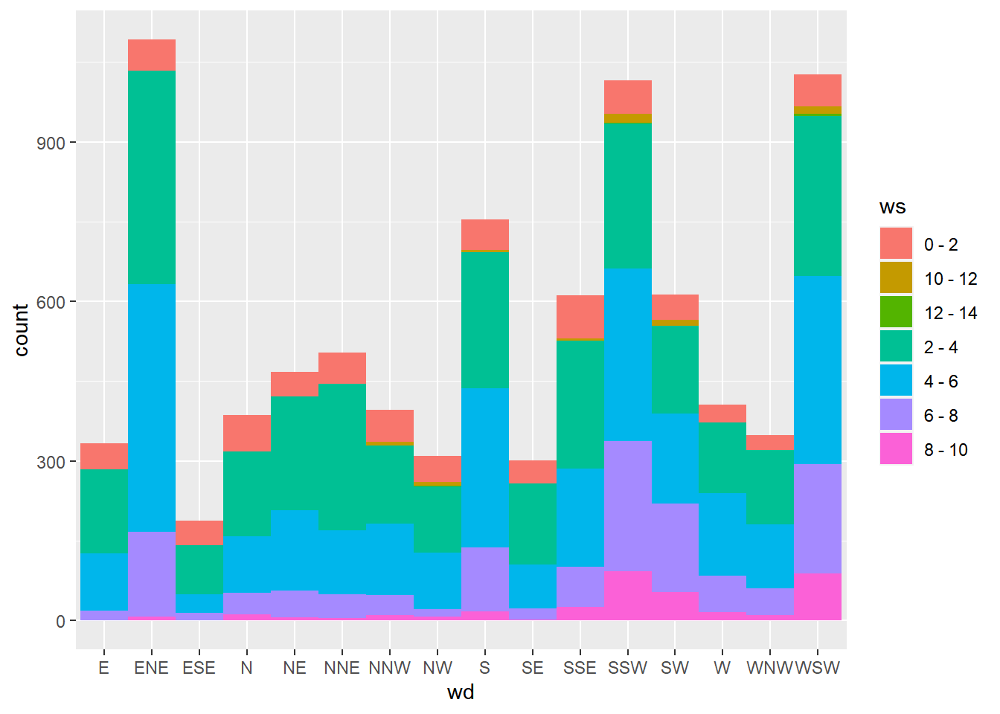
# Convert to polar coordinates:
ggplot(wind, aes(wd, fill = ws)) +
geom_bar(width = 1) +
coord_polar()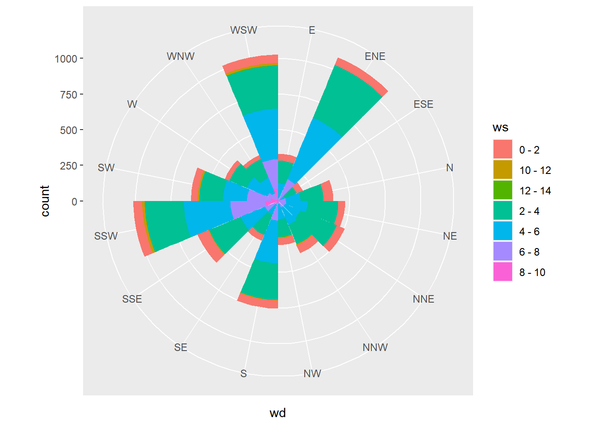
Set the start argument to position North at the top of the plot.
# Convert to polar coordinates:
ggplot(wind, aes(wd, fill = ws)) +
geom_bar(width = 1) +
coord_polar(start = -pi/2.3)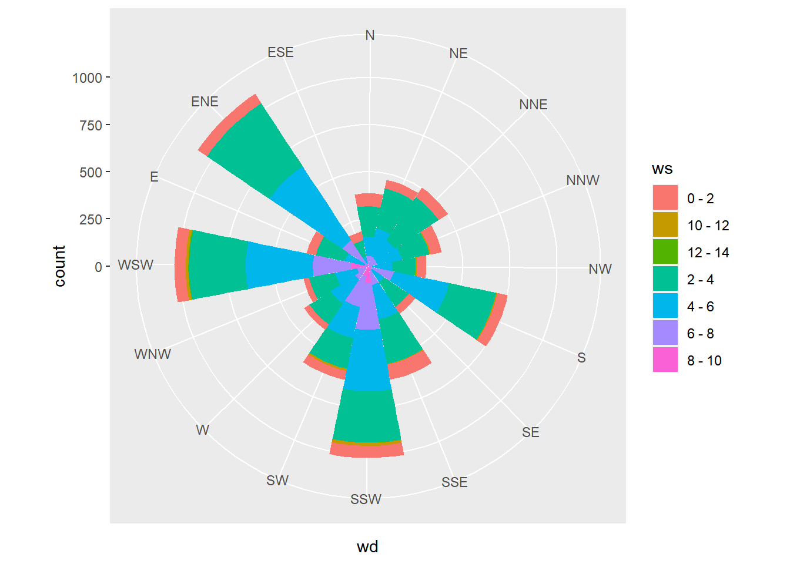
8.3 Facets
8.3.1 The facets layer
Faceting splits the data up into groups, according to a categorical variable, then plots each group in its own panel. ggplot2 will coerce variables to factors when used in facets.
8.3.1.1 Basics
facet_grid()- For splitting the data by one or two categorical variables,
facet_grid()is best.
- For splitting the data by one or two categorical variables,
# Example, muti cols
p + facet_grid(cols = vars(variable_name))
# Example, muti rows
p + facet_grid(rows = vars(variable_name)
# Both cols and rows by different variables
p + facet_grid(rows = vars(A), cols = vars(B))ggplot(mtcars, aes(wt, mpg)) +
geom_point() +
# Facet rows by am
facet_grid(rows = vars(am))
ggplot(mtcars, aes(wt, mpg)) +
geom_point() +
# Facet columns by cyl
facet_grid(cols = vars(cyl))
ggplot(mtcars, aes(wt, mpg)) +
geom_point() +
# Facet rows by am and columns by cyl
facet_grid(rows = vars(am), cols = vars(cyl))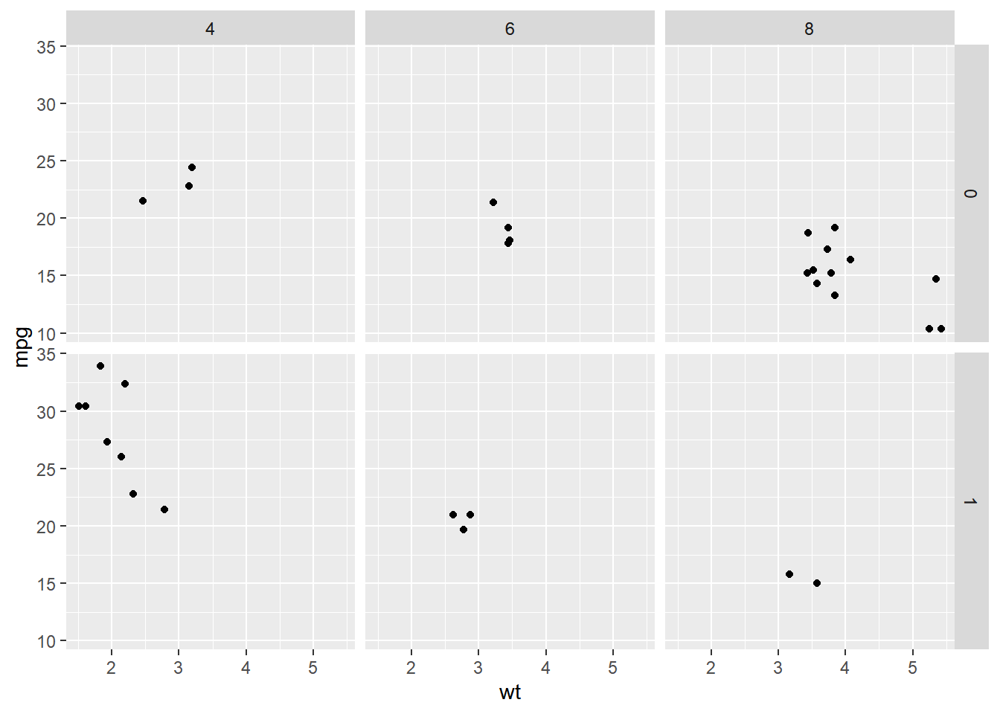
8.3.1.2 Many variables
Two variables are mapped onto the color aesthetic, using hue and lightness. To achieve this we combined fcyl and fam into a single interaction variable, fcyl_fam. This will allow us to take advantage of Color Brewer’s Paired color palette.
mtcars <- mtcars %>%
mutate(fcyl_fam = interaction(fcyl, fam, sep = ":"))
mtcars$fcyl_fam## [1] 6:1 6:1 4:1 6:0 8:0 6:0 8:0 4:0 4:0 6:0 6:0 8:0 8:0 8:0 8:0 8:0 8:0 4:1 4:1
## [20] 4:1 4:0 8:0 8:0 8:0 8:0 4:1 4:1 4:1 8:1 6:1 8:1 4:1
## Levels: 4:0 6:0 8:0 4:1 6:1 8:1# Color the points by fcyl_fam
ggplot(mtcars, aes(x = wt, y = mpg, color = fcyl_fam)) +
geom_point() +
# Use a paired color palette
scale_color_brewer(palette = "Paired")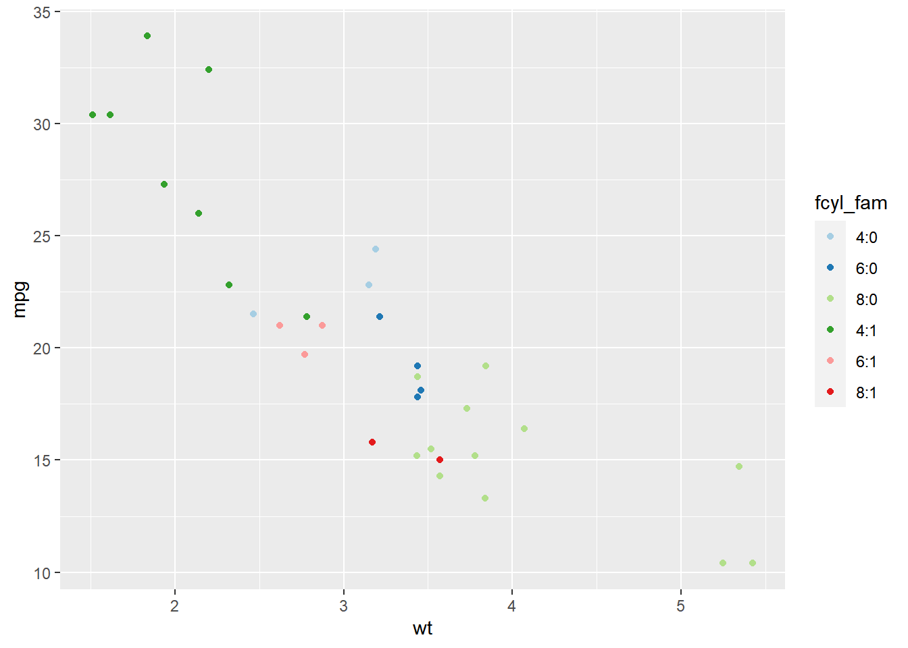
# Update the plot to map disp to size
ggplot(mtcars, aes(x = wt, y = mpg, color = fcyl_fam, size = disp)) +
geom_point() +
scale_color_brewer(palette = "Paired")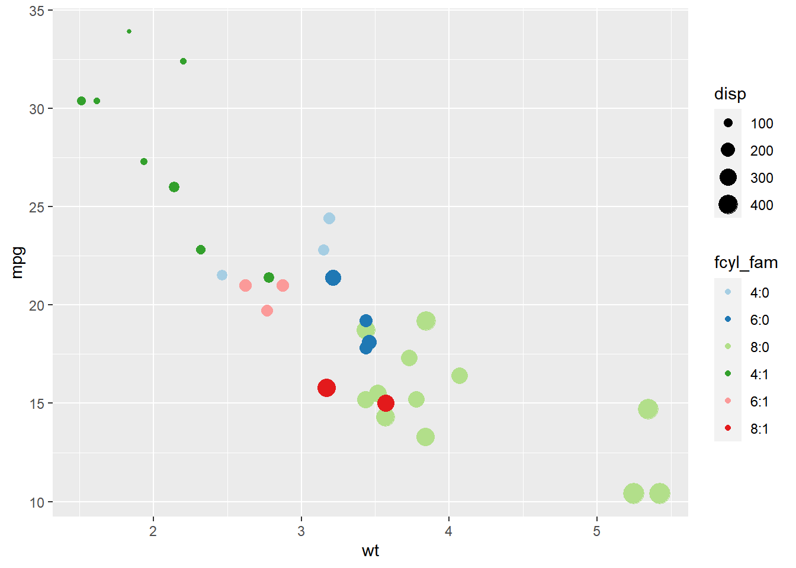
# Update the plot
ggplot(mtcars, aes(x = wt, y = mpg, color = fcyl_fam, size = disp)) +
geom_point() +
scale_color_brewer(palette = "Paired") +
# Grid facet on gear and vs
facet_grid(rows = vars(gear), cols = vars(vs))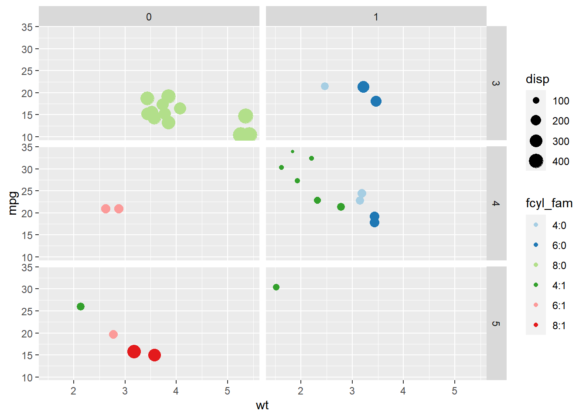
8.3.1.3 Formula notation
lmfunction- Everything on the left of the tilde (
~) will split according to rows, and everything on the right will split according to columns.
- Everything on the left of the tilde (
| Modern notation | Formula notation |
|---|---|
facet_grid(rows = vars(A)) |
facet_grid(A ~ .) |
facet_grid(cols = vars(B)) |
facet_grid(. ~ B) |
facet_grid(rows = vars(A), cols = vars(B)) |
facet_grid(A ~ B) |
ggplot(mtcars, aes(wt, mpg)) +
geom_point() +
# Facet rows by am using formula notation
facet_grid(am ~ .)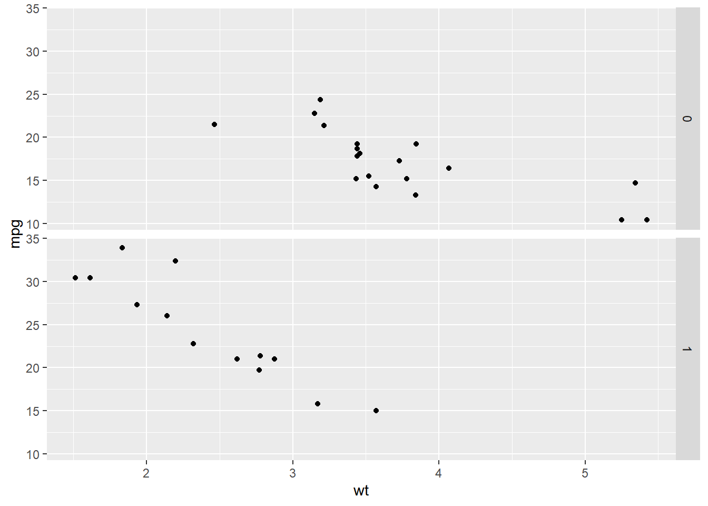
ggplot(mtcars, aes(wt, mpg)) +
geom_point() +
# Facet columns by cyl using formula notation
facet_grid(. ~ cyl)
ggplot(mtcars, aes(wt, mpg)) +
geom_point() +
# Facet rows by am and columns by cyl using formula notation
facet_grid(am ~ cyl)
8.3.2 Facet labels & order
Two typical problems with facets:
- Poorly labeled (e.g. non descriptive)
- Wrong or inappropriate order
Solutions:
Easy: Add labels in ggplot
Argument in the
facetlayer:labeller = label_value: default, displays only the valuelabeller = label_both: displays both the value and the variable namelabeller = label_context: displays only the values or both the values and variables depending on whether multiple factors are faceted
Better: Relabel and rearrange factor variables in your dataframe (assign proper labels in your original data before plotting).
Argument:
fct_recode(): relabeling and reordering factorsfct_relevel(): change order of levels
8.3.2.1 Labelling facets
# Plot wt by mpg
ggplot(mtcars, aes(wt, mpg)) +
geom_point() +
# The default is label_value
facet_grid(cols = vars(cyl))
# Plot wt by mpg
ggplot(mtcars, aes(wt, mpg)) +
geom_point() +
# Displaying both the values and the variables
facet_grid(cols = vars(cyl), labeller = label_both)# Plot wt by mpg
ggplot(mtcars, aes(wt, mpg)) +
geom_point() +
# Label context
facet_grid(cols = vars(cyl), labeller = label_context)
# Plot wt by mpg
ggplot(mtcars, aes(wt, mpg)) +
geom_point() +
# Two variables
facet_grid(cols = vars(vs, cyl), labeller = label_context)8.3.2.2 Setting order
If you want to change the order of your facets, it’s best to properly define your factor variables before plotting.
Let’s see this in action with the mtcars transmission variable am. In this case, 0 = "automatic" and 1 = "manual".
Here, we’ll make am a factor variable and relabel the numbers to proper names. The default order is alphabetical.
# Make factor, set proper labels explictly
mtcars$fam <- factor(mtcars$am, labels = c(`0` = "automatic",
`1` = "manual"))
# Check default level
str(mtcars$fam)## Factor w/ 2 levels "automatic","manual": 2 2 2 1 1 1 1 1 1 1 ...# Default order is alphabetical
ggplot(mtcars, aes(wt, mpg)) +
geom_point() +
facet_grid(cols = vars(fam))# Make factor, set proper labels explictly, and
# manually set the label order
mtcars$fam <- factor(mtcars$am,
levels = c(1, 0),
labels = c("manual", "automatic"))
# Check level changed
str(mtcars$fam)## Factor w/ 2 levels "manual","automatic": 1 1 1 2 2 2 2 2 2 2 ...# View again
ggplot(mtcars, aes(wt, mpg)) +
geom_point() +
facet_grid(cols = vars(fam))8.3.3 Facet plotting spaces
Shared scales make it easy to compare between facets, but can be confusing if the data ranges are very different. In that case, used free scales.
8.3.3.1 Continuous variables plotting spaces
By default every facet of a plot has the same axes. If the data ranges vary wildly between facets, it can be clearer if each facet has its own scale. This is achieved with the scales argument to facet_grid().
"fixed"(default): axes are shared between facets.free: each facet has its own axes.free_x: each facet has its own x-axis, but the y-axis is shared.free_y: each facet has its own y-axis, but the x-axis is shared.
When faceting by columns, "free_y" has no effect, but we can adjust the x-axis. In contrast, when faceting by rows, "free_x" has no effect, but we can adjust the y-axis.
# Shared scales
ggplot(mtcars, aes(wt, mpg)) +
geom_point() +
# Facet columns by cyl
facet_grid(cols = vars(cyl))# X axis values are different between variables - free_x
ggplot(mtcars, aes(wt, mpg)) +
geom_point() +
# Update the faceting to free the x-axis scales
facet_grid(cols = vars(cyl),
scales = "free_x")# y axis values are different between variables - free_y
ggplot(mtcars, aes(wt, mpg)) +
geom_point() +
# Swap cols for rows; free the y-axis scales
facet_grid(rows = vars(cyl), scales = "free_y")8.3.3.2 Categorical variables plotting spaces
When you have a categorical variable with many levels which are not all present in each sub-group of another variable, it’s usually desirable to drop the unused levels.
By default, each facet of a plot is the same size. This behavior can be changed with the spaces argument, which works in the same way as scales: "free_x" allows different sized facets on the x-axis, "free_y", allows different sized facets on the y-axis, "free" allows different sizes in both directions.
ggplot(mtcars, aes(x = mpg, y = car, color = fam)) +
geom_point() +
# Facet rows by gear
facet_grid(rows = vars(gear))Notice that every car is listed in every facet, resulting in many lines without data.
To remove blank lines, set the scales and space arguments in facet_grid() to free_y. Freeing the y-scale to remove blank lines helps focus attention on the actual data present.
ggplot(mtcars, aes(x = mpg, y = car, color = fam)) +
geom_point() +
# Free the y scales and space
facet_grid(rows = vars(gear),
scales ="free_y",
space = "free_y")8.3.4 Facet wrap & margins
Using facet_wrap()
When you want both x and y axes to be free on every individual plot
- i.e. Not just per row or column as per
facet_grid()
- i.e. Not just per row or column as per
When your categorical (factor) variable has many groups (levels)
i.e. too many sub plots for column or row-wise faceting
A more typical scenario
8.3.4.1 Wrapping for many levels
facet_grid() is fantastic for categorical variables with a small number of levels. Although it is possible to facet variables with many levels, the resulting plot will be very wide or very tall, which can make it difficult to view.
The solution is to use facet_wrap() which separates levels along one axis but wraps all the subsets across a given number of rows or columns.
ggplot(Vocab, aes(x = education, y = vocabulary)) +
stat_smooth(method = "lm", se = FALSE) +
# Create facets, wrapping by year, using vars()
facet_wrap(vars(year))## `geom_smooth()` using formula = 'y ~ x'
ggplot(Vocab, aes(x = education, y = vocabulary)) +
stat_smooth(method = "lm", se = FALSE) +
# Create facets, wrapping by year, using a formula
facet_wrap(~ year)## `geom_smooth()` using formula = 'y ~ x'ggplot(Vocab, aes(x = education, y = vocabulary)) +
stat_smooth(method = "lm", se = FALSE) +
# Update the facet layout, using 8 columns
facet_wrap(~ year, ncol = 8)## `geom_smooth()` using formula = 'y ~ x'8.3.4.2 Margin plots
Facets are great for seeing subsets in a variable, but sometimes you want to see both those subsets and all values in a variable.
Here, the margins argument to facet_grid() is your friend.
FALSE(default): no margins.TRUE: add margins to every variable being faceted by.c("variable1", "variable2"): only add margins to the variables listed.
# Convert vs to categorical variable fvs
mtcars$fvs <- factor(mtcars$vs, labels = c(`0` = "V-shaped",
`1` = "straight"))
ggplot(mtcars, aes(x = wt, y = mpg)) +
geom_point() +
# Facet rows by fvs and cols by fam
facet_grid(rows = vars(fvs, fam),
cols = vars(gear))Add all possible margins to the plot.
ggplot(mtcars, aes(x = wt, y = mpg)) +
geom_point() +
# Update the facets to add margins
facet_grid(rows = vars(fvs, fam),
cols = vars(gear),
margin = TRUE)Update the facets to only show margins on "fam".
ggplot(mtcars, aes(x = wt, y = mpg)) +
geom_point() +
# Update the facets to only show margins on fam
facet_grid(rows = vars(fvs, fam),
cols = vars(gear),
margins = "fam")Update the facets to only show margins on "gear" and "fvs".
ggplot(mtcars, aes(x = wt, y = mpg)) +
geom_point() +
# Update the facets to only show margins on gear and fvs
facet_grid(rows = vars(fvs, fam),
cols = vars(gear),
margins = c("gear", "fvs"))8.4 Best Practices
- Common pitfalls in Data Viz
- Best way to represent data
- For effective explanatory (communication), and
- For effective exploratory (investigation) plots
8.4.1 Bar plots
8.4.1.1 Dynamite plots
In the video we saw many reasons why “dynamite plots” (bar plots with error bars) are not well suited for their intended purpose of depicting distributions. (A further perceptual problem is that our bars give the impression of having data where there is no data. Plus, the region above the mean contains values but no ink!)
If you really want error bars on bar plots, you can of course get them, but you’ll need to set the positions manually. A point geom will typically serve you much better.
# Plot wt vs. fcyl
ggplot(mtcars, aes(x = fcyl, y = wt)) +
# Add a bar summary stat of means, colored skyblue
stat_summary(fun = mean,
geom = "bar",
fill = "skyblue") +
# Add an errorbar summary stat std deviation limits
stat_summary(fun.data = mean_sdl,
fun.args = list(mult = 1),
geom = "errorbar",
width = 0.1)Remember, we can specify any function in fun.data or fun.y and we can also specify any geom, as long as it’s appropriate to the data type.
8.4.1.2 Position dodging
In this exercise we will add a distinction between transmission type, fam, for the dynamite plots and explore position dodging (where bars are side-by-side).
# Update the aesthetics to color and fill by fam
ggplot(mtcars, aes(x = fcyl, y = wt,
color = fam, fill = fam)) +
stat_summary(fun = mean, geom = "bar") +
stat_summary(fun.data = mean_sdl, fun.args = list(mult = 1),
geom = "errorbar", width = 0.1)The stacked bars are tricky to interpret. Make them transparent and side-by-side.
# Set alpha for the first and set position for each stat summary function
ggplot(mtcars, aes(x = fcyl, y = wt, color = fam, fill = fam)) +
stat_summary(fun = mean,
geom = "bar",
alpha = 0.5,
position = "dodge") +
stat_summary(fun.data = mean_sdl,
fun.args = list(mult = 1),
geom = "errorbar",
position = "dodge",
width = 0.1)The error bars are incorrectly positioned. Use a position object.
# Define a dodge position object with width 0.9
posn_d <- position_dodge(width = 0.9)
# For each summary stat, update the position to posn_d
ggplot(mtcars, aes(x = fcyl, y = wt, color = fam, fill = fam)) +
stat_summary(fun = mean,
geom = "bar",
position = posn_d,
alpha = 0.5) +
stat_summary(fun.data = mean_sdl,
fun.args = list(mult = 1),
width = 0.1,
position = posn_d,
geom = "errorbar")8.4.1.3 Using aggregated data
Here, we’ve created a summary data frame called mtcars_by_cyl which contains the average (mean_wt), standard deviations (sd_wt) and count (n_wt) of car weights, for each cylinder group, cyl. It also contains the proportion (prop) of each cylinder represented in the entire dataset. Use the console to familiarize yourself with the mtcars_by_cyl data frame.
# mean and sd
mtcars_by_cyl1 <- mtcars %>%
group_by(cyl) %>%
summarise(mean_wt = mean(wt),
sd_wt = sd(wt))
mtcars_by_cyl1## # A tibble: 3 × 3
## cyl mean_wt sd_wt
## <dbl> <dbl> <dbl>
## 1 4 2.29 0.570
## 2 6 3.12 0.356
## 3 8 4.00 0.759# n and prop
mtcars_by_cyl2 <- mtcars %>%
count(cyl) %>%
mutate(prop = n / nrow(mtcars)) %>%
rename(n_wt = n)
mtcars_by_cyl2## cyl n_wt prop
## 1 4 11 0.34375
## 2 6 7 0.21875
## 3 8 14 0.43750# inner join by cyl column
mtcars_by_cyl <- mtcars_by_cyl1 %>%
inner_join(mtcars_by_cyl2, by = "cyl"); mtcars_by_cyl## # A tibble: 3 × 5
## cyl mean_wt sd_wt n_wt prop
## <dbl> <dbl> <dbl> <int> <dbl>
## 1 4 2.29 0.570 11 0.344
## 2 6 3.12 0.356 7 0.219
## 3 8 4.00 0.759 14 0.438If it is appropriate to use bar plots, then it nice to give an impression of the number of values in each group.
stat_summary() doesn’t keep track of the count. stat_sum() does (that’s the whole point), but it’s difficult to access. It’s more straightforward to calculate exactly what we want to plot ourselves.
# Using mtcars_cyl, plot mean_wt vs. cyl
ggplot(mtcars_by_cyl, aes(x = cyl, y = mean_wt)) +
# Add a bar layer with identity stat, filled skyblue
geom_bar(stat = "identity",
fill = "skyblue")
ggplot(mtcars_by_cyl, aes(x = cyl, y = mean_wt)) +
# Swap geom_bar() for geom_col() and remove stat argument
geom_col(fill = "skyblue")ggplot(mtcars_by_cyl, aes(x = cyl, y = mean_wt)) +
# Set the width aesthetic to prop
geom_col(fill = "skyblue",
aes(width = prop))## Warning in geom_col(fill = "skyblue", aes(width = prop)): Ignoring unknown
## aesthetics: width
ggplot(mtcars_by_cyl, aes(x = cyl, y = mean_wt)) +
geom_col(aes(width = prop), fill = "skyblue") +
# Add an errorbar layer
geom_errorbar(
# ... at mean weight plus or minus 1 std dev
aes(ymin = mean_wt - sd_wt, ymax = mean_wt + sd_wt),
# with width 0.1
width = 0.1
)## Warning in geom_col(aes(width = prop), fill = "skyblue"): Ignoring unknown
## aesthetics: width8.4.2 Heatmaps use case scenario
8.4.2.1 Heat maps
Since heat maps encode color on a continuous scale, they are difficult to accurately decode. Hence, heat maps are most useful if you have a small number of boxes and/or a clear pattern that allows you to overcome decoding difficulties.
To produce them, map two categorical variables onto the x and y aesthetics, along with a continuous variable onto fill. The geom_tile() layer adds the boxes.
# To get barley dataset
library(lattice)
# Using barley, plot variety vs. year, filled by yield
ggplot(lattice::barley, aes(year, variety, fill = yield)) +
# Add a tile geom
geom_tile()Add a facet_wrap() function with facets as vars(site) and ncol = 1. Strip names will be above the panels, not to the side (as with facet_grid()).
# Previously defined
ggplot(lattice::barley, aes(x = year, y = variety, fill = yield)) +
geom_tile() +
# Facet, wrapping by site, with 3 column
facet_wrap(facets = vars(site), ncol = 3) +
# Add a fill scale using an 2-color gradient
scale_fill_gradient(low = "white", high = "red")Update the fill scale to use an n-color gradient with scale_fill_gradientn() (note the n). Set the scale colors to the red brewer palette.
library(RColorBrewer)
# A palette of 9 reds
red_brewer_palette <- brewer.pal(9, "Reds")
# Update the plot
ggplot(lattice::barley, aes(x = year, y = variety, fill = yield)) +
geom_tile() +
facet_wrap(facets = vars(site), ncol = 3) +
# Update scale to use n-colors from red_brewer_palette
scale_fill_gradientn(colors = red_brewer_palette)8.4.2.2 Heat map alternatives
There are several alternatives to heat maps. The best choice really depends on the data and the story you want to tell with this data. If there is a time component, the most obvious choice is a line plot.
# The heat map we want to replace
# Don't remove, it's here to help you!
ggplot(lattice::barley, aes(x = year, y = variety, fill = yield)) +
geom_tile() +
facet_wrap( ~ site, ncol = 1) +
scale_fill_gradientn(colors = brewer.pal(9, "Reds"))# Using barley, plot yield vs. year, colored and grouped by variety
ggplot(lattice::barley, aes(x = year, y = yield,
color = variety, group = variety)) +
# Add a line layer
geom_line() +
# Facet, wrapping by site, with 1 row
facet_wrap( ~ site, nrow = 1)Display only means and ribbons for spread.
# Using barely, plot yield vs. year, colored, grouped, and filled by site
ggplot(lattice::barley, aes(x = year, y = yield,
color = site, group = site, fill = site)) +
# Add a line summary stat aggregated by mean
stat_summary(fun = mean, geom = "line") +
# Add a ribbon summary stat with 10% opacity, no color
stat_summary(fun.data = mean_sdl,
fun.args = list(mult = 1),
geom = "ribbon",
alpha = 0.1,
color = NA)Whenever you see a heat map, ask yourself it it’s really necessary. Many people use them because they look fancy and complicated - signs of poor communication skills.
8.4.3 When good data makes bad plots
8.4.3.1 Bad plots: style
Color
Not color-blind-friendly (e.g. primarily red and green)
Wrong palette for data type (remember sequential, qualitative and divergent)
Indistinguishable groups (i.e. colors are too similar)
Ugly (high saturation primary colors)
Text
Illegible (e.g. too small, poor resolution)
Non-descriptive (e.g. “length” -- of what? which units?)
Missing
Inappropriate (e.g. comic sans)
8.4.3.2 Bad plots: structure and content
Information content
Too much information (TMI)
Too little information (TLI)
No clear message or purpose
Axes
Poor aspect ratio
Suppression of the origin
Broken x or y axes
Common, but unaligned scales
Wrong or no transformation
Statistics
- Visualization doesn’t match actual statistics
Geometries
Wrong plot type
Wrong orientation
Non-data Ink
- Inappropriate use
3D plots
Perceptual problems
Useless 3rd axis
Use your common sense:
Is there anything on my plot that obscure a clear reading of the data or the take-home message?
8.4.3.3 Typical problems
Let’s take a look at the steps we could take to produce and improve the plot in the view.
The data comes from an experiment where the effect of two different types of vitamin C sources, orange juice or ascorbic acid, were tested on the growth of the odontoblasts (cells responsible for tooth growth) in 60 guinea pigs.
The data is stored in the TG data frame, which contains three variables: dose, len, and supp.
TG <- read_csv("data/TG.csv")
str(TG)## spc_tbl_ [60 × 3] (S3: spec_tbl_df/tbl_df/tbl/data.frame)
## $ len : num [1:60] 4.2 11.5 7.3 5.8 6.4 10 11.2 11.2 5.2 7 ...
## $ supp: chr [1:60] "VC" "VC" "VC" "VC" ...
## $ dose: num [1:60] 0.5 0.5 0.5 0.5 0.5 0.5 0.5 0.5 0.5 0.5 ...
## - attr(*, "spec")=
## .. cols(
## .. len = col_double(),
## .. supp = col_character(),
## .. dose = col_double()
## .. )
## - attr(*, "problems")=<externalptr># Initial plot
growth_by_dose <- ggplot(TG, aes(dose, len, color = supp)) +
stat_summary(fun.data = mean_sdl,
fun.args = list(mult = 1),
position = position_dodge(0.1)) +
theme_gray(3)
# View plot
growth_by_doseThe first plot contains purposely illegible labels. It’s a common problem that can occur when resizing plots. There is also too much non-data ink.
# Initial plot
growth_by_dose <- ggplot(TG, aes(dose, len, color = supp)) +
stat_summary(fun.data = mean_sdl,
fun.args = list(mult = 1),
position = position_dodge(0.1)) +
theme_classic()
# View plot
growth_by_dose
Use the appropriate geometry for the data:
In the new stat_summary() function, set fun to to calculate the mean and the geom to a "line" to connect the points at their mean values.
# Plot
growth_by_dose <- ggplot(TG, aes(dose, len, color = supp)) +
stat_summary(fun.data = mean_sdl,
fun.args = list(mult = 1),
position = position_dodge(0.2)) +
# Use the right geometry
stat_summary(fun = mean,
geom = "line",
position = position_dodge(0.1)) +
theme_classic()
# View plot
growth_by_doseMake sure the labels are informative:
Add the units
"(mg/day)"and"(mean, standard deviation)"to the x and y labels, respectively.Use the
"Set1"palette.Set the legend labels to
"Orange juice"and"Ascorbic acid".
# Plot
growth_by_dose <- ggplot(TG, aes(dose, len, color = supp)) +
stat_summary(fun.data = mean_sdl,
fun.args = list(mult = 1),
position = position_dodge(0.2)) +
stat_summary(fun = mean,
geom = "line",
position = position_dodge(0.1)) +
theme_classic() +
# Adjust labels and colors:
labs(x = "Dose (mg/day)",
y = "Odontoblasts length (mean, standard deviation)",
color = "Supplement") +
scale_color_brewer(palette = "Set1",
labels = c("Orange juice", "Ascorbic acid")) +
scale_y_continuous(limits = c(0,35),
breaks = seq(0, 35, 5),
expand = c(0,0))
# View plot
growth_by_dose